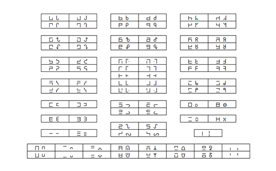

－－－－－－－－－－－－－－－－－－－－－－－－－－－－－－－－－－－－－－－－－－－－－－－－－－－－－
作：平成３１年４月３０日
人工言語ランディ
Twitter @tokipona_landi 清水隆紀
改：令和３年１月１日
－－－－－－－－－－－－－－－－－－－－－－－－－－－－－－－－－－－－－－－－－－－－－－－－－－－－－
ランディは、私が世界で最も簡単な言語を作ろうとして誕生した人工言語です。ランディは、わずか１３６個の単語と、簡単な文法から成り立っており、誰でも簡単に学ぶことができます。
まずは、簡単な文を作るために必要な単語をいくつか紹介します。
⊓ これは[イ]と発音し「わたし」を意味します。
⊔ これは[ア]と発音し「あなた」を意味します。
ᛦ これは[フィ]と発音し「男性」を意味します。
ᘖ これは[フ]（ヒュ）と発音し「女性」を意味します。
⊣ これは[ドゥ]と発音し「見る」を意味します。
ᛦ の発音は、口笛を吹く時のように両唇を接近させるか、もしくは上の前歯を軽く下唇に当てて作ります（fの音）。一方、ᘖ の発音は、ᛦ のように唇を接近させるのではなく、喉の奥を摩擦させて作ります（hの音）。ᘖ（hu）の発音は難しいので、[ヒュ]と発音しても構いません。
ᴗ これは[ス]と発音しますが、通常は子音[ s ]だけで発音されます。
ᴖ これは[ル]と発音しますが、通常は子音[ l ]だけで発音されます。
このᴗとᴖの意味については、後ほど説明します。
では、簡単な文を作ってみましょう。
主語と述語の間にᴗを入れると、それで文が完成します。
⊓ᴗᛦ [イスフィ] わたしは男性です
⊔ᴗᘖ [アスヒュ] あなたは女性です
また、動詞と目的語の間にᴖを入れると、それで文が完成します。日本語とは語順が異なり、動詞が先に来ます。
⊣ᴖ⊔ [ドゥルア] あなたを見ます
⊣ᴖᘖ [ドゥルフ] 女性を見ます
なお、[ドゥルア]のように、ᴗやᴖの直後に母音が来る場合は、母音ウ（ ᴗやᴖに内在している母音）を省略することができません。そのため、[ドゥラ]ではなく、[ドゥルア]と発音します。
ここまで理解できれば、おそらく次の文も理解できると思います。
ᛦᴗ⊣ᴖ⊓ [フィスドゥルイ] 男性がわたしを見ます
動詞に、現在形、過去形、未来形の区別はありません。語られている内容が、現在なのか過去なのか未来なのかを区別する方法については、後ほど説明します。
さて、ランディの単語には、[ン]で終わるものが多くあります。たとえば、⊓ [イ]は「私」を意味しますが、⊓- [イン] は「愛する」を意味します。ᛦ [フィ]は「男性」を意味しますが、ᛦ- [フィン]は「鳥」を意味します。ᘖ [ヒュ]は「女性」を意味しますが、ᘖ- [ヒュン]は「爬虫類・両生類」を意味します。このように[ン]を付けると、まったく意味の異なる単語になります。
ᛦᴗ⊣ᴖᛦ- [フィスドゥルフィン] 男性が鳥を見ます
ᘖᴗ⊣ᴖᘖ- [ヒュスドゥルヒュン] 女性が蛇を見ます
なお、- [ン]で終わる単語の後にᴗが付く場合は、- とᴗをまとめて ᨉ と書きます。同様に、- [ン]で終わる単語の後にᴖが付く場合は、- とᴖをまとめて ᨊ と書きます。
ᛦᨉ⊣ᴖᛦ [フィンスドゥルフィ] 鳥が男性を見ます
ᘖᨉ⊣ᴖᘖ [ヒュンスドゥルヒュ] 蛇が女性を見ます
ᛦᴗ⊓ᨊᘖ [フィスインルヒュ] 男性が女性を愛します
さて、ᨊ は、[ンル]と読みますが、[ン]と[ル]を入れ替えて、[ルン]と読んでも構いません。[ンル]は発音しにくいため、[ルン]と読むほうが一般的です。上の例文の場合は、[インル]が[イルン]になります。同様に ᨉ についても、[ン]と[ス]を入れ替えて、[スン]と読んでも構いませんが、こちらは元々の[ンス]のほうが発音しやすいので、わざわざ入れ替えて読む必要性がないため、そのまま[ンス]と読むほうが一般的です。
なお、[ン]の発音は、日本語の「ん」の発音と同様に、後続音によって調音点が変化します。たとえば、-ᑫ [ンタ]の場合は [nta] と発音され、-ᒉ [ンパ]の場合は [mpa] と発音されます。また、-⊔ [ンア]の場合は [na] にならず、日本語の「んあ」の発音と同様に「ん」が鼻母音化します。もしくは、-⊔ [ヌア] ＝ [nua] と発音します。
では、さらに単語を紹介していきます。
ⲷ- [シン] 絵 [チン]と発音しても構いません
ᖶ- [リン] 動物（哺乳類）
ᓗ- [ホン] 紙 / 本 [ヒョン]と発音しても構いません
ᛘ- [ハン] 魚 [ヒャン]と発音しても構いません
ᕊ [スィ] 大きい [ツィ]と発音しても構いません
ᖶ [リ] 小さい
ᒪ- [クン] 人
ᛘ [ハ] 水 [ヒャ]と発音しても構いません
ᕹ [ディ] 良い / 親しい
⊐ [オ] 彼 / 彼女
ᒲ [ニ] この / これ
ᕹ- [ディン] 悪い
「動物の絵」は ⲷ-ᖶ-（絵＋動物）です。「魚の本」は ᓗ-ᛘ-（本＋魚）です。日本語とは語順が逆になります。また、「大きい魚」は ᛘ-ᕊ（魚＋大きい）です。「小さい動物」は ᖶ-ᖶ（動物＋小さい）です。日本語とも英語とも語順が逆になります。形容詞は名詞の後に置きます。
ᒪ-ᖶ は「小さい人」なので「子ども」を意味します。ᛘᕊ は「大きい水」なので「海」を意味します。ᒪ-ᕹ は「親しい人」なので「友達」を意味します。
ランディでは、あらゆる修飾語を名詞の後に置きます。「この水」は「水＋この」という語順になるので、ᛘᒲ です。ᘖ⊓ は「女性＋私(の)」なので「私の妻」を意味します。ᛦ⊔ は「男性＋あなた(の)」なので「あなたの夫」を意味します。
では、これまでに出てきた単語で、文を作ってみましょう。なお、句点は、ᛧ で表します。
ᛘ-⊔ᴗᕊᛧ あなたの魚は大きいです。
ᛦ-⊐ᴗᖶᛧ 彼の鳥は小さいです。
ⲷ-ᛘᨉᕹᛧ 魚の絵は良いです。
ᒲᴗᖶ-ᕹ-ᛧ これは悪い動物です。
さらに単語を紹介していきます。
ᕋ- [ラン] 話す / 伝える / 言葉
ᖍ [ギ] 切る
ᖍ- [ギン] 食べる / 飲む / 食料
ᘔ [フゥ] 果物 / 野菜 日本語の[フ]と同じ両唇音（唇歯音）です
ᘔ- [フゥン] 昆虫 / 虫 日本語の[フン]と同じ両唇音（唇歯音）です
o- [ウン] 交尾する
⩆ [シャ] 何か / 物事 [チャ]と発音しても構いません
ᒯ [ナ] 否定形
ᖿ- [カン] ～になる / 来る
ᖿ [カ] ～できる
ᒧ [グ] ～したい / ～しなければならない / 願い
⊣ [ドゥ] ～しようとする
「私は話す」は、⊓ᴗᕋ- です。「あなたは食べる」は、⊔ᴗᖍ- です。しかし、これは同時に「私は言葉です」「あなたは食料です」という意味にもなります。述部が動詞なのか名詞なのかは、文脈で判断するしかありません。
ランディの基本的な文は、「主語ᴗ動詞ᴖ目的語」の形になりますが、このᴗやᴖは、１つの文に１つずつしか使えないわけではありません。次の例文を見てみましょう。
ᘔᨉᖍᨉo-ᛧ 虫が食べている。交尾もしている。
→ 複数のᴗをもつ文です。１つの主語に２つの動詞が付いています。
⊓ᴗᖍᨊᘔᴖᛘ-ᛧ 私は野菜を食べる。魚も食べる。
→ 複数のᴖをもつ文です。１つの動詞に２つの目的語が付いています。
また、動詞の位置（ ᴗとᴖの間）に来る単語は、１つだけとは限りません。次に、ここに複数の単語が入る例を見てみましょう。また、動詞等の前に助動詞が付加される例についてもここで一緒に見てみましょう。
⊓ᴗᕋ-ᕹᴖ⩆ᛧ 私は物事をうまく伝えます。 ᕋ-ᕹ （伝える＋良く）
ᘔᨉᖍ-ᖶᴖᘔᛧ 虫が果物をかじります。 ᖍ-ᖶ （食べる＋小さく）
⊐ᴗᖍᒯᴖᘔᛧ 彼女は野菜を切りません。 ᖍᒯ （切る＋否定）
ᘔᨉᖿ-ᕊᛧ 虫が大きくなります。 ᖿ-ᕊ （～になる＋大きく）
⊓ᴗᖿᖍᴖᒲᛧ 私はこれを切断できます。 ᖿᖍ （～できる＋切る）
⊓ᴗᒧᖍᨊᛘᛧ 私は水を飲みたいです。 ᒧᖍ- （～したい＋飲む）
ᛦ-ᛦᴗ⊣o-ᛧ 雄鶏が交尾しようとします。 ⊣o- （～しようとする＋交尾）
ᴗとᴖに挟まれた語は、強制的に動詞として解釈されます。たとえば、ᕊ は「大きい」という意味ですが、⊓ᴗᕊᴖᒲ と言えば「私はこれを大きくする」という意味になります。同様に ᖶ は「小さい」という意味ですが「小さくする」という動詞にもなります。また、ᛘ は「水」を意味しますが、これを動詞として使うと「洗う」「濡らす」等の意味になります。
ᖍᨉᕊᴖ⊓ᛧ 食べ物が私を成長させます。
⊔ᴗᛘᴖ⊔ᛧ あなたは水を浴びます。
さらに単語を紹介していきます。
ᖾ [ピ] 与える / 置く
ᖵ [ソ] 知識 / 賢い [ツォ]と発音しても構いません
ᓓ [フォ] ～に / ～に行く / 動く / 英語の to や for に相当
ᒧ- [グン] お金
ᕍ- [ロン] ～で / ～に / 存在する / 英語の at や in や on に相当
ᖊ- [バン] 家
ᕍ [ロ] 道具
ᕊ- [スィン] 新しい [ツィン]と発音しても構いません
間接目的語は、直接目的語の後、つまり文末に置きます。
ᖾᴖᖵᓓ⊐ᛧ 彼に教えます。 ᖾᴖᖵ（知識を与える）ᓓ⊐（彼に）
ᖾᴖᒧ-ᕍ-ᖊ-ᛧ 家でお金を与えます。 ᕍ-ᖊ-（家で）
ᖾᴖᕍᕊ-ᓓ⊐ᕍ-ᖊ-ᛧ 新しい道具を彼に家で与えます。
ここで、ᓓ や ᕍ- は前置詞ですが、次のように動詞のように扱うこともできます。
⊓ᴗᓓᛧ 私は行きます。（さようなら）
⊓ᴗᓓ⊔ᛧ 私はあなたのほうに行きます。
⊓ᴗᕍ-ᛧ 私はいます。
⊓ᴗᕍ-ᖊ-ᛧ 私は家にいます。
ここでは、ᓓ や ᕍ- の後にᴖは付けません。ᴖを付けると、ᓓ や ᕍ- は他動詞となり、その後に続く名詞が直接目的語になってしまうので、次のように意味が変わってしまいます。
⊓ᴗᓓᴖ⊔ᛧ 私はあなたを動かします。
⊓ᴗᕍᨊᖊ-ᛧ 私は家を存在させます。
では次に、疑問文について解説します。
o [ウ] 何
ᒪ-o [クンウ] 誰 ᒪ-o（人＋何）＝誰
ᗴ [メ] 親
ᓚ- [ヘン] 変な / 狂った / 酔った [ヒェン]と発音しても構いません
ᖽ [ポ] 白い
ᖌ [ゴ] 黒い
ᒪ [ク] 赤い / 早い / 速い
ᒣ [ブ] 青い / 遅い
ᒐ [キ] 黄色い
英語のように疑問詞が語頭に出たり、語順が入れ替わったりすることはありません。基本的な文の形のまま回答として知りたい部分を疑問詞 o に置き換えれば疑問文になります。なお、疑問符（？）は、ᛌ で表します。
ᒪ-oᴗᕋ-ᛌ 誰が話していますか？
⊔ᴗoᴖ⊐ᛌ あなたは彼女に何をしていますか？
ᖶ-ᖽᒲᴗᖍᨊoᛌ この白い動物は何を食べますか？
「はい」か「いいえ」で回答を求める疑問文は、文の最後にᴖᛌ またはᴗᛌ を付加します。
⊐ᴗᗴᴖᛌ 彼女は親ですか？ （一般疑問文）
⊐ᴗᓚᨉᛌ 彼女は変ですよね？ （付加疑問文）
通常、一般疑問文（ ᴖᛌ の形）は、ᴖを省略して書きます。ᛌ だけで[ル？]と読みます。よって上記の ⊐ᴗᗴᴖᛌ は、⊐ᴗᗴᛌ になります。
質問に対して「はい」と答える場合は、「はい、○○です」の○○に相当する部分を繰り返します。「いいえ」と答える場合は、その後に ᒯ を添えるか、または単に ᒯ とだけ答えます。
ᒲᴗᖌᛌ これは黒いですか？
ᖌᒯᛧ ᒲᴗᒣᒪᛧ いいえ、これは紫色です。 ᒣᒪ（青＋赤）＝紫
ᒲᴗᒐᴗᛌ これは黄色いですよね？
ᒐᛧ はい。
ᒯᛧ ᒲᴗᒐᒪᛧ いいえ、これは橙色です。 ᒐᒪ（黄＋赤）＝橙
色を表す単語は、ᖽ ᖌ ᒪ ᒣ ᒐ の５種類です。その他の色は、これらの色を混ぜて（並べて）表します。たとえば、桃色は ᒪᖽ（赤＋白）、水色は ᒣᖽ（青＋白）になります。濃い灰色は ᖌᖽ（黒＋白）の順で並べ、薄い灰色は ᖽᖌ（白＋黒）の順で並べます。
次に、「～の～」という表現について説明します。
ᖊ-ᛘ は「水の部屋」なので、お風呂（またはトイレ）を意味します。ᛘᓚ- は「狂わせる水」なので、お酒を意味します。では、ᖊ-ᛘᓚ- といったら、どんな意味になるでしょうか？[バンハ＋ヘン]ならば「変なお風呂」の意味になるし、[バン＋ハヘン]ならば「お酒の家」（居酒屋）の意味になります。つまり、単語が[ＡＢＣ]と並んだときに[ＡＢ＋Ｃ]なのか[Ａ＋ＢＣ]なのかで意味が異なるのです。ランディでは、単語が[ＡＢＣ]と並んだ場合に、これを[ＡＢ＋Ｃ]と解釈します。そして、[Ａ＋ＢＣ]と言いたい場合には、英語のofにあたる ⊏ [エ]という単語を使って、[Ａ⊏ＢＣ]と表現します。
それでは、ᖍ-ᖊ-ᖵ は、どんな意味になるでしょうか？ᖍ- は「食料・料理」を意味し、ᖊ- は「家」を意味しているので、ᖍ-ᖊ- で「家庭料理」を意味します。これを ᖵ「賢い」が修飾しているので「賢い家庭料理」です。では、ᖍ-⊏ᖊ-ᖵ は、どんな意味になるでしょうか？ᖊ- は「家・建物」を意味し、ᖵ は「知識」を意味しているので、ᖊ-ᖵ で「学校」を意味します。これが ᖍ-「食事」を修飾しているので「学校給食」です。
次に、仮定法の表現について説明します。
ᕋ [ラ] ～ならば / ～のとき
ᕬ [ミ] 持つ / 含む
⩇- [シュン] 神聖な / 神 [チュン]と発音しても構いません
ᖈ- [ガン] する / 作る / 働く
ᖾ- [ピン] 感じる / 触る / 気持ち
ᑫ [タ] 目 / 探す / 調べる
ᑫ- [タン] ～から / ～によって / 原因 / 理由 / 英語の from に相当
ᑫ-o [タンウ] なぜ ᑫ-o（理由＋何）＝なぜ
ᒥ [プ] 今 / 時間
「ＡならばＢです」という表現は、ＡとＢを ᕋ でつなぎます。また、ᕋ は仮定法に限らず幅広く文を接続する働きがあります。
ᕬᴖᖍ-ᕋᖾᴖ⊐ᓓ⊔ᛧ もし食料を持っているならば、それをあなたに与えます。
⩇ᨉᒧᕋ⊓ᴗᖈ-ᛧ 神が望むなら、私はやります。
ᖾᨊᑫᕋᑫᴗᖿ-ᒪᛧ 目を触ったら、目が赤くなりました。
⊓ᴗᖿᒯᖈ-ᑫ-ᒲᛧ この理由によって、私は働けません。 ＝ ᑫ-ᒲᕋ⊓ᴗᖿᒯᖈ-ᛧ
⊓ᴗᒧᓓᕍ-ᒥᛧ 私は今行かなければなりません。 ＝ ᒥᕋ⊓ᴗᒧᓓᛧ
⊐ᴗᖍᨊᘔ-ᑫ-oᛌ 彼が虫を食べるのは何故ですか？ ＝ ᑫ-oᕋ⊐ᴗᖍᨊᘔ-ᛌ
ᒥ は「今」を意味しますが、文中では「～に」に相当する前置詞を伴って、ᕍ-ᒥ になります。しかし、ᕋ を用いて「今」を文頭に出す場合は、ᕍ-ᒥᕋ ではなく、ᒥᕋ になります。
次に、接続詞 ᕋ を用いた「時制」の表現について説明します。
ランディの動詞には、時制がありません。その文が現在のことを言っているのか、過去のことなのか、未来のことなのかは、基本的に文脈から判断します。しかし、特別に時制を明確に示したい時には、接続詞 ᕋ を使うことで、これを示すことができます。文末に ᕍ-ᒥ を付加するか、文頭に ᒥᕋ を付加すれば、現在のことを言っていると分かります。同様に ᕍ-ᒥᕈ [ロンプセ]もしくは ᒥᕈᕋ [プセラ]を付加すれば過去形になり、ᕍ-ᒥᑲ [ロンプティ]もしくは ᒥᑲᕋ [プティラ]を付加すれば未来形になります。ᒥᕈ は「時間＋後方の」なので「過去」を意味し、ᒥᑲ は「時間＋前方の」なので「未来」を意味します。
次に、固有名詞の扱い方について説明します。
固有名詞で使用できる音節（発音）は、ランディに存在する１３６個の全単語（１３６音節）からᴗとᴖを除いた１３４個（１３４音節）に限られます。[ス]と[ル]の発音は固有名詞では使えません。また、ランディでは[ン]と[ヌ]の発音を区別せず、たとえば ⊔-⊔ は[アンア]と読んでも[アヌア]と読んでも構わないため、[ヌ]という単語（文字）がありません。そのため[ヌ]の発音も固有名詞として使うことができません。[ス][ル][ヌ]の発音については、それぞれ[ソ/シュ][ロ/ドゥ][ノ]等の似た音を代用します。また、y音（ヤ行）とw音（ワ行）の発音は、ランディには存在しないので、ヤ行についてはハ行（ヒャ行）を代用したり、ワ行についてはファ行やバ行を代用したりします。
また、固有名詞は形容詞として扱います。つまり「花子」ならば、これは人名なので「人」を意味する ᒪ- を前に付けて ᒪ-“ᛘᒯᒍ”[クンハナコ]になります。固有名詞は、それが固有名詞であることが分かるように“ ”で囲みますが、直後にᴗやᴖが来る場合や、文末においては、括弧の終わりの記号を省略できます。
次に、ランディにおいて文法的に重要な意味を持つ ⩇ [シュ/チュ] および ⲷ [シ/チ] の用法について説明します。
⊏ [エ] ～のもの
ᔑ [シェ] あ！ / あはは！ / わお！ [チェ]と発音しても構いません
ᒉ- [パン] パン / ご飯
ᕵ [デ] 甘い / 可愛い / お菓子
ᕫ- [マン] 多い / とても
⊓ᕫ- [イマン] 私達 ⊓ᕫ-（私＋多い）＝私達
⊢ [トゥ] 聞く / 従う
ᖼ- [ケン] ～で（前置詞）/ ～を使って / 使う
日本語には句読点があり、英語にもコンマとピリオドがありますが、ランディには句点（ピリオド）はあっても、読点（コンマ）がありません。⩇ という単語が、読点（コンマ）やコロン（ ： ）の役割を果たします。
ᒪ-“ᛘᒯᒍ”⩇ᒉ-ᒲᴗ⊏⊔ᛌ 花子さん、このパンはあなたのものですか？
「花子さん」と呼びかけた後に ⩇ を置き、文を続けます。
⊓ᴗᒧᴖ⩇⊔ᴗᖿ-ᓓᖊ-⊓ᛧ 私はあなたが私の家に来ることを望みます。
「私は ⩇ を望む」と言った後に、⩇ の内容（文）を続けます。
⊔ᴗᖿ-ᓓᖊ-⊓⩇ᕹᓓ⊓ᛧ あなたが私の家に来ることは、私にとって良いことです。
ランディではᴗを２回使うと、[主語ᴗ述語１ᴗ述語２]と解釈されますが、[（主語ᴗ述語）ᴗ述語]を表現したい場合、[主語ᴗ述語 ⩇ 述語]のように ⩇ を使います。⩇ は、それ以前の文全体を受けて、述語につなげます。
ᕍ⩇⊔ᴗᖈ-ᕋᴗᕹᛧ あなたが作った道具は良い。
⩇ は、関係代名詞の機能も持っています。「道具 ⩇ あなたが作った」で「あなたが作った道具」の意味になります。これ全体を主語にする場合は [名詞 ⩇（主語ᴗ述語）ᕋ ᴗ述語]のように ᕋ を添えて述語につなげます。この ᕋ があることによって、[名詞 ⩇（主語ᴗ述語１ᴗ述語２）]との区別ができます。しかし、この ᕋ は省略しても混乱が生じない場合が多いので、大抵の場合は省略します。
１．（ᕍ⩇（⊔ᴗᖈ-））ᴗᕹᛧ （（あなたが作った）道具）は良い。 [文]
２．ᕍ⩇（⊔ᴗᖈ-ᴗᕹ）ᛧ （あなたは作り、良い）…な道具。 [名詞句]
このように、２は意味を成しておらず、ᕋ がなくても１であると解釈可能です。
続いて、ⲷ [シ/チ] の用法について説明します。
ランディの基本構造である[主語ᴗ述語]のᴗの代わりに ⲷ を置いて[主語 ⲷ 述語]の形にすると、命令、勧誘、期待などを表す形になります。呼びかけの ⩇ を ⲷ の前に入れても構いませんが、ⲷ は既に ⩇ の意味を含んでいるので、通常は ⩇ を省略します。
ᛦᖶⲷ⊢ᴖᗴᛧ 少年よ、親の言うことを聞きなさい。
⩇-ⲷᖾᴖᒧ-ᓓ⊓ᛧ 神よ、私に財産を与えてください。
⊓ᕫ-ⲷᖍᨊ⩆ᕹᛧ 私たちみんなで何か良いものを食べましょう。
主語が ⊔ の命令形は、⊔ を省略することができます。ⲷ から始まる文になります。
ⲷᕋ-ᒯᛧ ⲷᖈ-ᛧ 喋らないでください。働いてください。
ⲷᖼ-ᒯᴖᕍᒲᛧ この道具は使わないでください。
また、動詞の後に ⲷ を置くと、その動詞が受動態になります。[主語ᴗ動詞ᴖ目的語]を受動態にする場合は、動詞の後に ⲷ を置き、主語と目的語を入れ替えます。
⊓ᴗ⊓-ᛧ 私は愛します。
⊓ᴗ⊓-ⲷᛧ 私は愛されます。
⊓ᴗ⊓-ⲷᴖ⊔ᛧ 私はあなたに愛されます。
なお、ランディでは「私は泥棒に財布を盗まれる」というような受動態は、作ることができません。これは能動態にすると[泥棒ᴗ盗むᴖ私の財布]なので、受動態に戻すと[私の財布ᴗ盗むⲷ ᴖ泥棒]になります。このように、受動態の主語は「私の財布」であり、「私」だけを主語にして受動態を作ることはできません。
感嘆文は、文末に ᔑ を付けます。なお、感嘆符（！）は、¦ で表します。また、ᔑ は単独で使うと、ᔑ¦「わお！」とか、ᔑᔑᔑ¦「あはは！」という意味になります。
さらに単語を紹介していきます。
ᒥ- [プン] しかし / ～だけ
ᒐ- [キン] 確かに / ～も / 今でも
ᑭ- [テン] 脚 / 足
ᖈ [ガ] 強い / 激しい / 力
ᑭ [テ] 腕 / 手
ᑲ- [ティン] 汚い
ᖉ [ゲ] 熱い / 火 / 燃やす
ᗱ [モ] 殺す / 死
ᓕ- [フェン] 戦う / 打つ
ᒥ- は、その置かれる位置によって意味が変わります。
ᒥ-ᑭ-⊔ᴗᖈᛧ しかし、あなたの脚は強いです。
ᑭ⊔ᒥᨉᑲ-ᛧ あなたの手だけが汚いです。
⊓ᴗᖉᒥᨊᖊ-⊔ᛧ 私はあなたの家を燃やしただけです。
ᒐ- は、その置かれる位置によって意味が変わります。
ᒐ-⊓ᴗᗱᴖ⊐ᛧ 確かに私は彼を殺しました。
⊓ᒐᨉᓕᨊ⊐ᛧ 私も彼を攻撃しました。
⊓ᴗᒐ-⊓ᨊ⊐ᛧ 私は今でも彼を愛しています。
⊓ᴗ⊓ᨊᒐ-⊐ᛧ 私が愛しているのは確かに彼です。
⊓ᴗᓕᨊ⊐ᒐ-ᛧ 私は彼も攻撃しました。
さらに単語を紹介していきます。
⩇- [シュン] 上方 / 空 [チュン]と発音しても構いません
ᕷ- [ドン] 下方 / 床
ᑲ [ティ] 前方 / 正面
ᕈ [セ] 後方 / 裏面 / 背中 [ツェ]と発音しても構いません
ᖇ [ビ] 横 / 隣
ᓚ [ヘ] 内側 [ヒェ]と発音しても構いません
⩍- [ヒン] 石 / 岩 / 硬い
ᔐ- [ション] 店 / 取引する [チョン]と発音しても構いません
ᖆ- [ボン] 丸 / 円 / 輪 / 球
⩌ [ファ] 頭 / 率いる
ᑯ [ト] 板 / 机
ᖊ [バ] 器 / 鞄
ᓕ [フェ] 外側 / 皮
ᒉ [パ] 口
ᛘᴗᖿ-ᑫ-⩇-ᛧ 雨です（水が空から来ます）。
⊓ᴗ⊣⩇ᨊ⩍-ᕊᛧ 私は大きな岩を見上げます。 ⊣⩇-（見る＋上方）＝見上げる
ᘔᒪᴗᓓᕷ-ᛧ リンゴ（赤い果実）が落ちます。 ᓓᕷ-（～に行く＋下方）＝落ちる
⊓ᴗ⊣ᴖᘖ-ᕍ-ᑲᔐ-ᛧ 私は店の前で蛇を見ました。 ᕍ-ᑲᔐ-（～で＋前方＋店の）
ᘔᨉᕍ-ᕈ⊔ᛧ あなたの背後に虫がいます。 ᕍ-ᕈ⊔（～に＋後方＋あなたの）
ᖾᴖᖆ-ᕍ-ᖇoᛌ ボールを何の横に置いたの？ ᕍ-ᖇo（～に＋横＋何の）
ᒪ-ᖶᴗᕍ-ᓚ⊏ᗴᘖᛧ 赤ちゃんが母親の胎内にいます。 ᕍ-ᓚ⊏ᗴᘖ（～に＋内側＋～の＋母親）
ᕍ- は前置詞ですが、「上方 / 下方 / 前方 / 後方 / 横 / 内側 / 外側」等は、すべて名詞です。そのため、これらの「空間名詞」の後に複数の単語が続く場合は、ᓚ⊏ᗴᘖ のように、英語のofに相当する ⊏ が必要になります（なるはずです）。しかし、[Ａ＋ＢＣ]においてＡが空間名詞の場合については、⊏ を付けなくても意味が正しく伝わる場合がほとんどなので、⊏ を省略することを許容しています。
ᕍ-⩇-⩌⊐ 彼の頭の上に ᕍ-ᕷ-ᑯᕊ 大きな机の下に
ᕍ-ᖇᖊᖶ 小さな鞄の近くに ᕍ-ᓕᒉᖊ- 玄関（家の口）の外に
さらに単語を紹介していきます。
ᔐ [ショ] 同じ [チョ]と発音しても構いません
ᔑ [シェ] ～よりも [チェ]と発音しても構いません
ᖆ [ボ] 棒
ᕷ [ド] 道 / 方法
ᖷ [サ] 他の / 変える / 差 [ツァ]と発音しても構いません
⊣- [ドゥン] すべて
ᖴ- [レン] 洋服 / 布
ᖆ⊔ᴗᕊᔐ⊏⊓ᛧ あなたの棒は私のと同じくらい長いです。 （等級）
ᖆ⊔ᴗᕊᔑ⊏⊓ᛧ あなたの棒は私のより長いです。 （比較級）
ᕷ⊔ᴗᕹᔑᕷᖷ⊣-ᛧ あなたのやり方が一番良いです。 （最上級）
ᔑᕷᖷ⊣- は、「～よりも＋方法＋他の＋全ての」で「全ての他の方法よりも」という意味になるので、これは比較級による最上級の表現になります。通常は、省略形の ᔑ⊣- を使います。
ᘔᒲᴗᕊᔑ⊣-ᛧ この果実は最も大きいです。
ᖍᨊᘔᕊᔑ⊣-ᛧ 最も大きい果実を食べます。
ᘔᕊᔑ⊣ᨉᒲᛧ 最も大きい果実はこれです。
⊓ᴗᖍ-ᒪᴖᘔᛧ 私は果実を速く食べます。
⊓ᴗᖍ-ᒪᴖᘔᔐ⊐ᛧ 私は果実を彼と同じくらい速く食べます。
⊓ᴗᖍ-ᒪᴖᘔᔑ⊐ᛧ 私は果実を彼より速く食べます。
⊓ᴗᖍ-ᒪᴖᘔᔑ⊣-ᛧ 私は果実を誰よりも速く食べます。
ᖴ-ᑭ⩇⊔ᴗᖈᨉᕵᔑᖴ-ᑭ-⩇⊓ᴗᖈ-ᛧ （ ᖴ-ᑭ 手袋 ᖴ-ᑭ- 靴下 ᖴ-⩌ 帽子 ᖴ-ᒉ マスク ）
あなたが作った手袋は、私が作った靴下よりも可愛いです。
では、ここからは「数」の表現について説明していきます。数字を表記する場合は、専用の数字を用いる場合と、その発音をそのまま文字として書く場合があります。
ᔕ ᒬ- [ネン] ０
ᓱ ᒲ- [ニン] １
ᓴ ᖵ- [ソン] ２ [ツォン]と発音しても構いません
ᖚ ᕈ- [セン] ３ [ツェン]と発音しても構いません
ᖙ ᖽ- [ポン] ４
ᔓ ⊢- [トゥン] ５
ᖘ ᖌ- [ゴン] ６
ᖗ ᕵ- [デン] ７
ᓭ ᑯ- [トン] ８
ᓯ ᕬ- [ミン] ９
１０以上の数字は、そのまま左から読んでいきます。ᓱᔕ（１０）は ᒲ-ᒬ- [ニンネン]と読み、ᖚᔕᔕ（３００）は ᕈ-ᒬ-ᒬ- [センネンネン]と読みます。数字は、名詞の後ろに付いて、その数を表します。ᖴ-ᖙ は「４着の洋服」を意味し、ᕍᖗ は「７つの道具」を意味します。
ᒯ- [ナン] 序数 / 数える
⩍ [ヒ] 植物
⩍ᖆ [ヒボ] 木 ⩍ᖆ（植物＋棒）＝木
ᕋ-ᒯ-ᓱ 第一言語 ᕋ-⊏ᒯ-ᓱ ですが、⊏ の省略が許容されます。
ᖊ-ᒯ-ᓴᖚ ２３番の部屋 ᖊ-⊏ᒯ-ᓴᖚ ですが、⊏ の省略が許容されます。
ⲷᒯᨊ⩍ᖆᛧ 木を数えてください。
大きな数字は３桁ごとに区切って、ᕊ を挿入して読みます。ᕊ は千、ᕊᕊ は百万、ᕊᕊᕊ は十億を表します。なお、小数点は ⩆- [シャン] （チャンでも可）と読みます。
ᓱᕊ 千
ᖙᔓᖘᕊ ４５万６千
ᖗᕊᕊᕊᓭᓯᔕᕊᕊ ７８億９千万
ᖚ⩆-ᓱᖙᓱᖘ ３．１４１６
次に、簡単な計算をしてみましょう。足し算は ᖇ [ビ]、引き算は ᖋ [ベ]、掛け算は ⊓- [イン]、割り算は ⊏ [エ]と読みます。また、累乗は o- [ウン]、平方根は０．５乗なので o-⩆-ᔓ [ウンシャントゥン]と読みます。
ᖗᖇᓭᴗᓱᔓ ７たす８は１５
ᓯᖋᖚᴗᖘ ９ひく３は６
ᓭ⊓-ᓭᴗᖘᖙ ８かける８は６４
ᖙᓴ⊏ᖗᴗᖘ ４２わる７は６
ᖚo-ᖙᴗᓭᓱ ３の４乗は８１
ᓴᔓo-⩆-ᔓᴗᔓ ２５の平方根は５
“ᖗᖇᓭ”⊏ᖚᴗᔓ （７＋８）÷３＝５
ᖘᖙo-“ᓱ⊏ᖚ”ᴗᖙ ６４^（１÷３）＝４ ⇒ ６４の立方根は４
次に、時間に関する様々な表現について説明します。
ᒥᑫ [プタ] 時刻 ᒥ⩌ [プファ] 日付
ᒥᑫoᛌ [プタウ] 何時何分？ ᒥ⩌oᛌ [プファウ] 何月何日？
ᒥᑫᓱᓴ⩆-ᓴᖚ １２時２３分 ᒥ⩌ᓱᓴ⩆-ᓴᖚ １２月２３日
ᒥᘔ- [プフゥン] 今（この１分間位）/ 分 ᒥᘔ-oᛌ 何分間？
ᒥᛘ- [プハン/ピャン] 今（この１時間位）/ 時 ᒥᛘ-oᛌ 何時間？
ᒥᘖ- [プフン/ピュン] 今日 / 日 ᒥᘖ-oᛌ 何日間？
ᒥᛦ- [プフィン] 今月 / 月 ᒥᛦ-oᛌ 何ヶ月間？
ᒥᖶ- [プリン] 今年 / 年 ᒥᖶ-oᛌ 何年間？
ᒥᘔ-ᓴ⩆-ᓱᖚ ２分１３秒 ᒥᛦ-ᔓ⩆-ᔓ ５ヶ月半
ᒥᖶ-ᖘᕊ ６千年間 ᒥᘔ-⩆-ᓱᔕ １０秒間
２日前とか５年前など、過去を示す「～前」という表現は、最後に ᕈ を付けます。
２日後とか５分後など、未来を示す「～後」という表現は、最後に ᑲ を付けます。
ᒥᘖ-ᓴᕈ おととい ᒥᘖ-ᓴᑲ あさって
ᒥᘔ-ᓱᔓᑲ １５分後 ᒥᖶ-ᓯᔓᕈ ９５年前
次に、重さや長さ等の表現について説明します。
ᒯ-ᕷ- 重さ（１㎏） ᒯ-ᖆ 長さ（１ｍ）
ᒯ-ᖆᖆ 広さ（１㎡） ᒯ-ᖆᖆᖆ 体積（１㎥）
ᒯ-ᕷ-ᓱᖶ １ｇ（グラム） ᒯ-ᕷ-ᖶᓱ でも可
ᒯ-ᕷ-ᓱᕊ １ｔ（トン） ᒯ-ᕷ-ᕊᓱ でも可
ᒯ-ᖆᔓ ５ｍ
ᒯ-ᖆᔓᖶ ５mm ᒯ-ᖆᖶᔓ でも可
ᒯ-ᖆᔓᕊ ５km ᒯ-ᖆᕊᔓ でも可
ᒯ-ᖆᖆᔓᕊ ５０００㎡ ᒯ-ᖆᖆᕊᔓ は不可（５０００㎡≠５ｋ㎡）
ᒯ-ᖆᖆᕊᔓ ５ｋ㎡ ᒯ-ᖆᖆᔓᕊ は不可（５ｋ㎡≠５０００㎡）
ここまで見てきた数字を含む表現について復習しましょう。
ⲷᖿ-ᕍ-ᒥ⩌ᖙ⩆-ᔓᛧ ４月５日に来てください。
⊓ᴗᒥᖶ-ᖙᖗᛧ 私は４７歳です。
ᒥᘖᨉᒥᘖ-ᒯ-ᖚᛧ 今日は３日目です。
ⲷᖈ-ᖼ-ᒥᛘ-ᓴᛧ ２時間で作って下さい。
⊓ᴗƟᕍ-ᒥᘔ-ᔓᛧ 私は５分待っています。 Ɵ [ム] 待つ
ⲷᕋ-ᖽᖼ-ᒥᘔ-⩆-ᓱᔕᛧ １０秒で答えてください。 ᕋ-ᖽ 答える ᕋ-ᖌ 問う
ᗴᛦ⊓ᴗᖿ-ᗱᕍ-ᒥᖶ-ᖘᕈᛧ 私の父は６年前に死にました。
ⲷᓓᕍ-ᒯ-ᖆᓭᔕᕊ⊏ᒥᛘ-ᛧ 時速８０kmで走って下さい。
ᛘ-ᒲᴗᕊᔑᒯ-ᕷ-ᖚᛧ この魚は３kg以上あります。
ᘔ-ᒲᴗᖶᔑᒯ-ᕷ-ᖶᔓᛧ この虫は５g以下（未満）です。
ここまでの解説で、ランディの全体像については、ほぼ掴めたと思います。まだ紹介していない単語がいくつか残っていますので、最後にそれら全てを紹介します。
ᒋ- [ペン] 開ける / ～し始める
ᖇ- [ビン] 閉める / ～し終える
Ɵ [ム] 待つ / ～し続ける / 残す
ᒋᨊᖊᛧ 容器を開けます。
ᖇᨊᖊᛧ 容器を閉めます。
ᒋ-ᖍᨊᛘ-ᛧ 魚を食べ始めます。
ᖇ-ᖍᨊᛦ-ᛧ 鳥を食べ終えます。
Ɵᖍᨊᛘᛧ 水を飲み続けます。
⊓ᴗƟᓓ⊐ᛧ 私は彼を待ちます。
ⲷƟᒯᴖᖍ-ᛧ 食事を残さないでね。
ᒣ- [ブン] 騙す / 偽り ⊔ᴗᒣᨊ⊓ᴗᛌ あなたは私を騙しましたね？
ᖋ [ベ] 外す / 去る ⲷᖋᴖᑲ-¦ きれいにして！
ᕴ [ダ] 狩る / 集める ᕴᴖᛘ-ᕊᛧ 大きな魚を釣ります。
ᖉ- [ゲン] 壊す / 壊れる ⊐ᴗᖉᨊᖊ-ᓓᛧ 彼は車（動く家）を壊します。
ᒋ [ペ] 冷たい / 寒い ᒋᕫᨉᕍ-ᛧ とても寒いです。
ᖷ- [サン] 太陽 / 光 ᖷᨉᖉᛧ 太陽は熱いです。
Ɵ- [ムン] 月 / 星 Ɵᨉᒋᛧ 月は冷たいです。
⊔- [アン] ～または ᒪ⊔-ᒣ 赤か青
⊏- [エン] ～と ᑭ⊏-ᑭ- 手と足
ᖼ [ケ] 毛 / 紐 ᘖ-ᖼᴗᖿ-ᛧ 蛇（紐状の爬虫類）が来ます。
ᓓ- [フォン] 階段 / ブロック ᖿᒯᖼᨊᓓ-ᛧ 階段は使えません。
⊐- [オン] 音 ᖿ⊢ᴖ⊐-ᛧ 音が聞こえます。
⩌- [ファン] 楽しい ⊐-⩌- 音楽（楽しい音）
ᒷ- [ノン] 寝る / 眠る / 休む ⊓ᴗᒧᒷ-ᛧ 私は眠いです。
ᔑ- [シェン] 色 / 塗る ᔑ-oᴗᕹᓓ⊔ᛌ あなたは何色が好きですか？
ᒍ [コ] 粉 / 砂 / 蜜 ᖾᴖᒍᕵᛧ 蜂蜜をあげます。
ᒍ- [コン] 空気 / 気体 ᒍ-ᓓᴗᖈᛧ 風（動く空気）が強いです。
ᕴ- [ダン] 組織 / 集団 ᕴ-ᗴᕊ 大家族
ᕫ [マ] 土地 / 土 / 国 ᒧᴖᕫᛧ 土地が欲しいです。
ᖴ [レ] 体 ᖴ⊐ᴗᖶᛧ 彼女の体は小さいです。
ᗴ- [メン] 古い ᖊ-ᒲᴗᗴᨉᕊᛧ この家は古くて大きいです。
ᒬ [ネ] 山 / 突起 ᒬ⊢⊏-ᒬᒍ- 耳（聞く突起）と鼻（空気の突起）
ᒷ [ノ] 名前 / 単語 ᒷ⊐ᴗoᛌ 彼の名前は何ですか？
ᗱ- [モン] 怖い / 怪物 ⊓ᴗᗱ-ᑫ-ᕋ-⊐ᛧ 私は彼の言葉を恐れます。
ᓗ [ホ] 穴 / 窪み ᓗᖶᴗᕍ-ᒲᛧ 小さい穴がここにあります。
ᖋ- [ベン] 普通 / 一般 / 標準 ᒪ-ᖋ- 一般人
⩆- [シャン] 飾り ᕋ-⩆- 余談
--- 以上 ---
－－－－－－－－－－－－－－－－－－－－－－－－－－－－－－－－－－－－－－－－－－－－－－－－－－－－－
作：昭和６２年１２月３１日
ランディ文字
改：平成３１年４月３０日
－－－－－－－－－－－－－－－－－－－－－－－－－－－－－－－－－－－－－－－－－－－－－－－－－－－－－
ランディ文字は、日本語の仮名のように、音節（子音＋母音）で１つの文字を持ちます。そのため、文字の種類は多くなりますが、その多くが、子音を表す記号と母音を表す記号の組み合わせから成り立っているので、それほど負担なく覚えられると思います。
まず、は母音uを表します。（上部の横線）は子音fを表し、（下部の横線）は子音hを表します。従って、はfuになり、はhuになります。同様に、は、それぞれ母音i a e oを表すので、は、それぞれfi fa fe foになり、は、それぞれhi ha he hoになります。また、（中央の横線）は子音mを表すので、は、それぞれmu mi ma me moになります。
u i a e o
fu fi fa fe fo
hu hi ha he ho
mu mi ma me mo
母音eを表すは、子音としてはlを表します。つまり、子音lを含む音（ラ行の音）は、その文字の一部にを含みます（等）。また、母音oを表すは、子音としてはsを表します。つまり、子音sを含む音（サ行の音）は、その文字の一部にを含みます（等）。具体的に言うと、左上の方角に伸びた線は母音iを表すので、はliになり、はsiになります。同様に、右下は母音aを表し、左下は母音eを表し、右上は母音oを表すので、は、それぞれli la le loになり、は、それぞれsi sa se soになります。また、母音を取り囲むように配置されるは子音nを表すので、は、それぞれni na ne noになります。
li la le lo
ni na ne no
si sa se so
母音aを表すを半回転させたものをの下に付けると、になります。同様の操作により、母音eを表すはになり、母音oを表すはになります。この操作は、子音x（シャ行）を表すので、は、それぞれxa xe xoになります。また、この操作ではxuとxiの文字が作れないので、特別に、をxu、をxiと決めます。
xu xi xa xe xo
母音iを表すは、子音としてはpまたはbを表します。母音uを表すは、子音としてはtまたはdを表します。母音aを表すは、子音としてはkまたはgを表します。従って、これらの左上に線を加えたはpi ti kiになり、右下に線を加えたはpa ta kaになり、左下に線を加えたはpe te keになり、右上に線を加えたはpo to koになります。また、母音を表す線をカギ型にすると（⇒）、その子音（破裂音）が無声音から有声音に変わります。従って、（pi ti ki）を有声音にしたはbi di giになり、（pa ta ka）を有声音にしたはba da gaになります。同様に、はbe de geになり、はbo do goになります。
pi pa pe po
bi ba be bo
ti ta te to
di da de do
ki ka ke ko
gi ga ge go
は子音pまたはbを表すので、この左半分をpuとし、右半分をbuとします。同様に、は子音kまたはgを表すので、この左半分をkuとし、右半分をguとします。は子音tまたはdを表しますが、これは左右に分けられないので、をtuとし、をduとします。
pu bu
tu du
ku gu
ここまでの説明で、７０個の音（文字）のうち、lu nu suの３個を除く文字の説明が終了しました。残りの文字、および疑問符、感嘆符、ピリオドについては、次のように定めます。
lu （上部の横線） nu （中央の横線） su （下部の横線）
？ （上部の縦線） ！ （縦線） ． （下部の縦線）
luとnuの２文字は、１文字にまとめることができます。 （上部と中央の横線）
nuとsuの２文字も、１文字にまとめることができます。 （中央と下部の横線）
数字については、次のように定めます。
０ １ ２ ３ ４
５ ６ ７ ８ ９
（１）と（９）を重ね合わせると、になります。（２）と（８）を重ね合わせても、（３）と（７）を重ね合わせても、（４）と（６）を重ね合わせても、になります。
ランディの文字や数字は、既存のフォントでは表せないため、普段は文字の形が似ているフォントを代用しています。以下、左側の文字が正式なランディ文字、右側が転写用のフォントです。

---------------------------------------------------------------------------------
【 付 録 】
星の王子さま
令和１年５月１日
----------------------------------------------------------------------------------------------
＊「星の王子さま」は、フランス人の小説家、サン=テグジュペリによって書かれた彼の代表作ですが、この文書は、彼の作品を忠実に翻訳したものではありません。原作と異なる部分も多々ありますが、ご了承ください。
＊この【付録】が書かれて以降、ランディに若干の改定がありましたが、その改定はこの文章には反映されていません。
１--------------------------------------------------------------------------------------------
僕がまだ小さい頃に読んだ本に素晴らしい絵があった。蛇が大きな獣を食べているところの絵だった。その本には、蛇は口を動かさずに獲物を丸飲みすると書かれていた。蛇は食べると、その後ずっと眠ってしまう。僕はこれを読んでワクワクした。僕は第１番目の絵を描いた。これがその絵だ。僕は大人の人に言った。見て！この絵って怖いでしょ？大人は言う。どうして帽子の絵が怖いの？僕の絵は、帽子の絵じゃない。僕の絵は、蛇が巨大な象を飲み込んだ絵なんだ。でも大人は僕の絵に象を見ることはできなかった。僕は第２番目の絵を描いた。それは蛇の中身を描いたものだった。大人は言った。蛇の絵も蛇の中身の絵も描くな。算数、地理、歴史、国語の勉強をしなさい！大人が僕の絵に不快感を示したので、僕はもう新しい絵は描かなかった。僕は何か別のことをしようと思った。僕は飛行機を操縦することにした。僕はたくさんの国に行った。地理の知識が役に立った。僕は中国とアリゾナの違いを知ることができる。この知識は、夜でも役に立つ。こうして僕は大人のことをよく知るようになった。でもこれは僕にとって良いことではなかった。この大人の人は良さそうだと僕が思った時は、僕はその人に第１番目の絵を見せる。僕は、この人が本当のことを知っている人なのかどうか知りたかった。でも、いつも大人は言う。これは帽子だね。僕は彼には、蛇のことも森のことも空に光る小さな星のことも喋らない。僕は大人が喜びそうなこと、政治やネクタイのことを話す。すると大人の人は僕に対して機嫌を良くする。
２--------------------------------------------------------------------------------------------
僕には話す相手がいなかった。ある時、僕が飛行機で旅をしていると、その飛行機が壊れてしまった。そして僕はサハラ砂漠に落ちた。僕はそこに１人ぼっちだったけど、飛行機を修理しなければならなかった。その作業は、とても大変だった。僕には少量の水しかなかった。僕は眠った。そして陽が昇った。すると何かの声が聞こえてきた。こんにちは。メスの羊の絵を描いてください。君は何がほしいの？僕にメスの羊の絵を描いて下さい。僕は起き上がると、目をこすった。僕はそこに変な男の子が立っているのが見えた。これがその男の子の絵なんだけど、この絵は本物の彼よりは見た目が悪い。僕はとても変な気分がした。自分以外の誰かがここの土地にいる。この子は砂漠にいるのに、元気そうに見えた。私は言った。君はこの砂漠の国で何をしているの？彼は答えた。メスの羊の絵を描いてください。それは彼にとっては重要なことだった。僕は紙と鉛筆を取り出した。でも僕には羊の絵を描くことなんてできない。学校ではそんな勉強はしなかった。僕は彼にそのことを伝えた。彼は言った。大丈夫。メスの羊の絵を描いてください。僕は僕の第１番目の絵を描いて見せた。彼は言った。違う！僕は蛇の中にいる象なんて欲しくない。蛇も象も嫌いだ。僕はメスの羊がほしいんだ。そこで僕は次の絵を描いてみせた。彼はその絵を見て言った。それも好きじゃない。別のを描いてください。僕は次の絵を描いた。彼はその絵を見て、口を丸くした。それはオスの羊だよ。僕は次の絵を描いた。彼はその絵を見て言った。それは年寄りの羊だよね。僕は若い羊がほしいんだ。今は、僕は飛行機を修理したかった。だから僕は次にこの絵を描いた。僕は言った。これは箱だよ。羊はこの箱の中だよ。すると彼は、気に入ったような顔をした。これは素晴らしい！このメスの羊は草をいっぱい食べたがるかな？君はどうしてそんなことを知りたがるの？だって僕の国ではすべての物が小さいから。僕は君に小さい羊を描いてあげたよ。そんなに小さくもないよ。見て！眠っちゃった。あぁ、この日が僕が王子さまをはじめて知ることになった日…というわけなんだ。
３--------------------------------------------------------------------------------------------
僕は、君はどうして来たの？とたずねた。彼は答えたくない様子だった。彼は僕の飛行機を見て、こう言った。これは何の模型なの？これは模型じゃないよ。これは飛行機だよ。それは空中を移動するんだ。僕は、空を飛べることを彼に自慢できて、気分が良かった。君は空から落っこちたの？うん。彼は笑った。王子さまは、これがとても面白かったようだ。僕は怒った。僕の不幸は深刻なことなんだ。彼は言った。君も空から来たんだ！君はどこの星から来たの？え！この時、僕は彼が別の星から来たことを知ることになった。君は別の星から来たの？彼はこれには答えなかった。彼は言った。君の道具だと長距離を移動することはできそうにないな。僕は王子さまのことを少ししか知らない。僕は彼のことをもっと知りたいと思った。君はメスの羊をどこに放すつもりなの？彼は言った。君が描いた箱はとても良いし、羊の家になる。僕は言った。君が良いのなら僕は羊のためのロープをあげるよ。彼は言った。僕はロープは必要ないよ。僕は言った。でも君の羊がいなくなっちゃうよ。彼はしばらく笑っていた。羊がどこに行っちゃうっていうの？知らないけど…、まっすぐ前へとか…。大丈夫。僕の家ではすべてが小さいから。まっすぐ前に進んでも、遠くへは行けない。
４--------------------------------------------------------------------------------------------
僕は、王子さまの星が、家と同じくらいの大きさしかないことを知った。大きな星もある。その名前は、地球、金星、火星…。小さい星もある。その数は非常に多い。それらの星の名前は番号だけだ。王子さまの小さい星は、第６１２星だ。はじめに、トルコの人がその星を見つけた。彼は天文学者の前でそのことを発表した。でも彼はトルコ人の服を着ていた。学者達は彼は嘘つきだと感じた。いつも大人はこんな感じだ。少しすると、トルコの王様が「ヨーロッパの服を着なさい」「着ないならば死刑だぞ」と命令した。次に、トルコ人はまた同じ内容を天文学者の前で発表した。すると今回は、学者の誰もが彼は本当のことを言っていると感じた。いつも僕は、第６１２星、このように言う。僕がこういう言い方をするのは大人のためだ。大人は数字がとても大好きだ。君が大人に対して「新しい友達ができたよ」と言っても、大人は「彼はどんな声をしているの？」とは言わない。「好きな遊びは何なの？」とか「昆虫を集めているの？」とは言わない。「彼は何歳なの？」「何人兄弟なの？」「お父さんはどれだけお金持ちなの？」とか言う。君が言う。「とても良い家を見たよ」「それは赤いレンガ造りで、正面には植物があって、屋根には鳥がいて…」でも大人はそれを頭を使って想像することができない。君が言う。「僕は家を見たよ」「それは百万ドルのお金と同じ価値だよ」すると大人は言う。「え！それは見るに素晴らしい」と。僕は王子さまがいることを知っている。知っている理由は、王子さまが楽しい人で、親しくて、メスの羊をほしがったから。メスの羊をねだったんだから彼はいたって言える。でも大人は「おまえは子どもなだけだ」と感じる。でも僕が「王子さまは、第６１２星から来た」と言えば、大人は「彼はいる」と感じる。大人は、こんなもんだ。これを理由に大人を恨んではいけない。子ども達よ、君達は生きる方法を知っている。数字なんて君達にとっては些細なことだ。僕は、この話を多くの人々に広めたい。僕は王子さまのことを忘れたくない。もし君が友達のことを忘れるならば、それは悪いことだ。すべての人が友達に恵まれるわけではない。もし僕が彼のことを忘れたら僕は大人の人と同じで、数字だけが良くなっちゃうだろう。僕は絵を描く道具を新しく買った。長い間、僕は絵を描かなかった。僕は、僕の絵が良いものなのかを知らない。時々、僕は実際とは違ったことを描いてしまうかもしれない。このことを悪く思わないでほしい。たぶん、僕もちょっと大人に似てきたのかもしれない。
５--------------------------------------------------------------------------------------------
少しずつ王子さまのことがわかってきた。彼は言った。メスの羊は小さな木を食べるの？僕は答えた。うん、食べるよ。それは良かった。僕にはどうしてそれが良いことなのかわからなかった。彼は言った。羊はバオバブも食べるの？僕は「バオバブっていうのはとても大きいんだよ」「象の群れでもそれを食べることなんてできないよ！」と答えた。彼は「象の群れ」というのを面白がって、それが僕の家にいたら象の上に象を乗せなきゃ…と言った。バオバブもはじめは小さいよね？そうだね。でも君はどうしてメスの羊にバオバブを食べてほしいの？君は知らないの？僕が考えるに、彼の家には良い木と悪い木がある。果物の木は良い木で、バオバブは悪い木だ。もしバオバブの小さな芽を見つけたら、それを引っこ抜かないといけない。もし引っこ抜かないなら、それは巨大になって、もう抜けなくなる。王子さまの家は、これが原因でひどく壊れてしまうだろう。彼は言う。いつでも僕は自分の体を洗って、自分の服も洗濯する。家も綺麗にする。バオバブの芽を引っこ抜く。いつでも仕事は同じだ。
６--------------------------------------------------------------------------------------------
王子さまは言った。僕は夕暮れが大好きなんだ。夕暮れを見よう！でも待たなければならないよ。どうして待つの？夕暮れの時間が来るのを待つんだよ。君は笑って、こう言った。てっきり僕は自分がまだ自分の家にいるんだと感じていたよ。太陽がアメリカを照らしていれば、太陽はフランスにはいないことは誰でも知っている。でもこれは王子さまの家では違っている。君がちょっと歩けば君は夕暮れを見られる！いつでも君は夕暮れに出会えるんだ。君は言った。僕は夕暮れを一日に何度も何度も見たことがあるよ。君は付け加えるように言った。人は切なくなった時に夕暮れを見ると気持ちが楽になるんだ。
７--------------------------------------------------------------------------------------------
王子さまは言った。メスの羊が小さな木を食べるなら、赤い花も食べるのかな？メスの羊は何でも食べるよ。棘のある植物でも食べるの？うん、食べるよ。じゃあ棘は何のためにあるの？知らないよ。その時、僕は飛行機を修理していた。この仕事は大変だった。僕は、おそらくこの土地に長く留まることになるだろうと考えていたので機嫌が悪かった。水もなくなりそうだった。僕はいい加減に返事をした。棘は良くないよね。棘があるのは赤い花が意地悪だからだよ。彼は機嫌を悪くしてこう言った。違うよ！花は強くないんだ。花は「僕の棘は強い武器なんだ」って思いたいんだ。僕は何も言わず、僕の道具で作業を続けた。彼は「君は…」と言いかけた。やめろ！僕は何も思わない。僕は大切なことをしているんだ。すると彼は、僕を変なふうに見た。大切なこと！君は大人と同じことを言っている！そう言われて僕は恥ずかしくなった。彼は言った。君は間違っている。彼は怒っていた。王子さまは言った。僕はある星を知っている。この星の人は、夜空に輝く星を見ることもないし、赤い花を感じることもないし、人を愛することもない。彼らは数字しか感じることができない。彼らは「私は大人である」と言う。これは君と同じだ。彼らは大人であることを理由に鼻を高くする。でもそんなの人間じゃない。彼らはキノコだ。彼らは何だって？キノコ！彼の顔は、怒りの気持ちで色あせていた。ずっと昔から、赤い花はみんな棘を持っている。ずっと昔から、メスの羊はみんなその棘を食べている。花は棘を持つ。でもこれは花にとって何の役にも立っていない。これは些細なことなわけ？羊と花の闘いは重要なことじゃないっていうの？大人の数字のほうが重要だっていうの？僕は、赤い花を知っている。それは世界中で一つだけの花。羊がその花を食べちゃったら、これは重要なことじゃないっていうの？羊が花を食べたら、それはすべての星が闇になるのと一緒だ。あぁ！これが重要じゃないっていうの？彼の目には涙が溢れていた。夜になった。僕は自分の道具を手放した。飛行機も生きることも死ぬことさえも、僕にとっては小さいことだった。僕は自分の腕で王子さまを抱きしめた。僕は言った。君の花は安全だよ。君の羊にくちわを描いてあげるよ。それと君の花のための部屋も描いてあげる。僕は何を言ってあげられるのかわからなかった。涙の国って、不思議なところだな。
８--------------------------------------------------------------------------------------------
僕は、王子さまの赤い花のことがわかってきた。ある日、王子さまは花を見た。そのツボミは大きくなった。それは素敵な色をしていた。長い間、それはツボミのままだった。それは、まだ咲きたくなかった。ようやく、ある朝、それは開いた。花は言った。あぁ！今、目が醒めたばかりなの。だから私は、見た目が良くないわ。王子さまは言った。ううん、君はとても綺麗だよ。花は甘い言葉で言った。それ本当？花は言った。私はおなかがすいているの。あなたは私にお食事を与えなければいけないのよ。王子さまは花に水をやった。花は自分の棘を見て、こう言った。私は虎が来たって怖くないわ。僕の星には虎なんていないよ。それに虎は草なんて食べないよ。花は言った。私は草じゃないわ！あぁ！変な言い方をしてごめんなさい。でも私は風が怖いの。あなたは、ついたてとか持っていないの？おかしいね。花なのに風が怖いなんて。夕暮れになったら私に覆いをちょうだい。あなたの家は寒くて、良くないわ。私の故郷は…、花は言いかけた。花は、ここに来た時はタネだったはず。花は故郷を知ることなんてできないはず。だから花はウソを言ってしまいそうになったことで恥ずかしくなった。覆いをちょうだい。僕が覆いを取りに行こうとしたら、君が僕に喋りかけてきたんじゃないか。王子さまは、花を愛していた。でもその花の言葉は、子どもにとっては重すぎた。王子さまは、花のことが難しく思えた。王子さまはこう思った。赤い花の言うことを聞くのはやめよう！花を見よう。花の匂いを感じよう。僕の花は、良い匂いを僕の家全体に放っている。でも僕の気持ちは、良くなかった。僕は星を出ることにした。どうして逃げたのだろう。花がひどいことを言ったから。でも、花は僕を愛していた。あぁ！でも僕は若すぎたから、愛することって何なのかわからなかった。
９--------------------------------------------------------------------------------------------
王子さまは、鳥を使って星から出ることにした。出発の日の朝、彼は自分の星を綺麗に掃除した。彼は、彼の火山を綺麗にした。星には２つの火山があった。彼はその火を使って食事を作っていた。星には火の消えた火山もあった。彼は、それも綺麗にした。もしかしたらまた火を噴くかもしれない。火山を綺麗にすれば、それは小さな火を噴くだけで、爆発はしない。王子さまは、もうこの家に戻ってくることはないかもしれないと感じながら、バオバブの芽を引っこ抜いた。ここでのすべての仕事は彼にとって素晴らしいものだった。最後に、彼は赤い花に水をやった。そして、ちょっと涙を浮かべながら言った。さようなら。花は喋らなかった。さようなら。花はくしゃみをして「私ってバカよね」と言った。私のことを悪く思わないでね。元気でね。王子さまは花に覆いを与えた。ちょっと変な感じがした。どうして花がこんなふうに言うのかわからなかった。花は言った。私はあなたを愛しているのよ。あなたがそれを知らないのは私のせい。あなたもバカ。私と一緒。もう覆いは必要ないわ。でも君は、風が怖いんだよね。風は嫌いじゃないわ。私は花よ。君は、虫は怖くないの？私は綺麗な蝶々を見たいんだから、毛虫もちょっとは我慢しなくちゃ。虫が私と喋ってくれないなら、誰が私の相手になってくれるのかしら。あなたはいないし。私は虎は怖くない。私には棘があるから。花は言った。いつまでここにいるの？良くないわよ。あなたは去りたいんでしょ。去りなさい。花は王子さまに涙を見せたくなかった。
１０------------------------------------------------------------------------------------------
王子さまは、たくさんの小さな星々の近くまで飛んで行った。彼には知りたいことがあった。最初に寄った星は、王様の星だった。王様はとても大きな服を身にまとっていて、とても大きな椅子に座っていた。彼は、王子さまを見るなり言った。わぁ！家来が来たぞ！王様は僕を見たことがないのに、どうして僕のことがわかるのかな？と王子さまは考えた。この王様は、すべての人を自分の家来であると思っている。そのことを王子さまは知らなかった。近くに来なさい。私は君をよく見たい。王様は、いま誰かに王様らしくできることを嬉しく思った。王子さまは、この星を見渡した。王様の服がこの星全体を覆っていたので、王子さまはこの星に腰を下ろすことができなかった。だから王子さまは、立ったままだった。王子さまはあくびをした。あくびをするとは何事だ。作法がなっとらんぞ。王子さまはちょっと赤くなって、こう言った。仕方ないよ。僕は長い旅をしているし、ちょっとしか寝ていないんだ。あぁ！ならば、あくびをしなさい。私は長いこと人のあくびを見ていない。あくびを見るのは私にとって良いことだ。さあ、あくびをしなさい。これは命令だぞ。王子さまは、真っ赤になった。今は、できないよ。すると王様は言った。あぁ！ならば別のことを命じよう。ある時は、あくびをせよ。それ以外の時は、あくびをするな。王様は、すべての人に対して、彼は偉大だと感じさせたかった。彼が命じれば、その命令通りに誰もが動くようにしたかった。でも彼は優しい人だったから、無理のないことだけを命令したかった。王様は言った。もし私が誰かに鳥になれと命じて、その人がそれをしなかったならば、その人は悪くない。私の命令が悪いのだ。王子さまは言った。座ることはできますか？王様は言った。私は命じる。座りたまえ。王様は、服の裾をどかした。この星はとても小さい。これは王子さまにとって不思議なことだった。質問してもいいですか？私は命じる。質問をせよ。あなたは何を治めているんですか？私はすべてを治めている。王様は、星を指さし、また別の星を指さし、そしてすべての星を指さした。あなたがすべてを治めているんですか？そうだ。私はすべての王である。これは王子さまにとって、すごいことだった。もし王子さまにこの力があれば、いろんなことができる。彼は何度も何度も夕暮れを見ることができる。王子さまは、自分の家のことを思い出して、ちょっと寂しくなって、こう言った。夕暮れが見たい。よいぞ。王様、太陽にこのように命じてください。夕暮れになれ！王様は言った。私が、誰かに対して虫のように空を飛べとか、蛇になれとか命じたとする。その人は、そうしなかった。誰が悪い？あなたです。そうだ。力は、知識から来るものだ。もし国民に海の底に沈めと命じたら、国民に殺されるだろう。王子さまは言った。僕の願い事は、大丈夫ですか？夕暮れが見たいんです。私はそれを命じよう。でも我々は待たねばならない。時が来れば、夕暮れになる。我々はいつまで待つのですか？えーと、午後７時４０分ぐらいである。王子さまは、眠くなってきた。僕がこの星でやりたいことは何もない。僕はここを去ろう。あぁ！行ってはならん！王様は、家来ができて嬉しかった。私は君を大臣にすることができるぞ。僕は何の大臣になれるの？お前は法務大臣だ。でも僕は何を裁けばいいの？この星には誰もいないよ。それは、わからない。私はこの星のすべてをまだ見ていない。長いこと私はここにいる。私は老人だ。たくさんは歩けない。王子さまは見た。僕はすべてを見たよ。裏側にも誰もいないよ。あぁ！ならば君は君自身を裁けばよい。これは何よりも難しいことだ。自分をうまく裁ければ、君はとても賢い人ということだ。僕はどこにいても、ちゃんと自分を裁けるよ。あぁ！私は、この星にはネズミがいると思う。夜になると、その音がする。君はそのネズミを裁くんだ。ある時は、そいつに死刑を命じればよい。また別の時は、そのネズミを無罪にしてやればよい。この星には一匹しかいない動物だからな。僕は死刑なんて命令したくないよ。さようなら。だめだ。王子さまは、そこを去りたかった。でも彼は王様の気分を損ねたくはなかった。王子さまは言った。王様は僕に「もう行きなさい」って命じることができるよ。王様は返事をしなかった。王子さまは、そこを去った。その時、王様は命じた。そなたを別の星に遣わせるぞ！王子さまは、大人ってかわってるなと思った。
１１------------------------------------------------------------------------------------------
王子さまは次の星に行った。この星には、ひとりの大人がいた。彼は王子さまを見るなり、こう言った。わぁ！私のファンがやってきた！その大人は、すべての人が自分のことを愛していると思い込んでいた。王子さまは言った。こんにちは。あなたは面白い帽子を持っていますね。すると彼は、手で帽子を動かした。人々は、私に対して拍手をする。すべての人が私の星に立ち寄る。はぁ？王子さまには、なんのことかわからなかった。拍手をしなさい。王子さまは、拍手をした。その大人は帽子を上に持ち上げた。最初に立ち寄った星のあの王様よりは、この人の方が面白そうだと王子さまは思った。王子さまは、また拍手をした。その大人の人は、また帽子を上に持ち上げた。王子さまは、何度も拍手をした。しばらくすると、もう楽しくなくなった。僕はあなたに帽子を下ろしてほしいんだけど、僕はどうしたらいいの？でもその大人は聞いていなかった。その人は都合のいいことだけしか聞かなかった。その大人は言った。君は私を讃えるか？僕は、讃えるってどういうことかわからなかった。讃えるというのは、こういうことだ。この星のすべての人間が、私よりも価値がなくて、私よりも悪くて、私よりも知識がなくて、私よりもみすぼらしくて、私よりも醜いと感じることだ。私は偉大で、良くて、知識が豊富で、おしゃれで、かっこいい。でも、この星にはあなたしかいないよ。いいから私を讃えてくれ。僕はあなたを讃えるよ。でも、どうしてそれがあなたにとって大事なの？王子さまは、そこを去った。彼は、大人ってかわってるなと思った。
１２------------------------------------------------------------------------------------------
王子さまは３番目の星に行った。この星には、のんだくれがいた。王子さまがこの星にいたのは、少しの時間だけだった。のんだくれは、じっとしていて、何も喋らなかった。彼のそばには、お酒のビンがたくさんあった。いくつかのビンにはお酒が入っていた。他のビンは、空っぽだった。王子さまは言った。あなたは何をしているの？彼は、しょんぼり答えた。俺は酒を飲んでいるんだ。どうして飲んでいるの？俺は忘れたくて飲んでいるんだ。あなたは何を忘れたいの？王子さまは、のんだくれの助けになりたかった。俺は、恥ずかしいのを忘れたいんだ。あなたはどうして恥ずかしいの？俺はたくさんの酒を飲むことが恥ずかしいんだ！王子さまは、そこを去った。彼は、大人ってかわってるなと思った。
１３------------------------------------------------------------------------------------------
王子さまは４番目の星に行った。この星には、仕事人間がいた。彼は仕事中だったので、王子さまを見ることもしなかった。王子さまは「こんにちは」と言った。口に咥えているタバコの火が消えているよ。１＋２＝３、３＋３＝６…、私にはタバコに火をつける時間さえないんだ。６＋４＝１０…。あぁ！君はまだこの場所にいたのか。数字がわからなくなってしまったよ。私には仕事がたくさんあるんだ。私は大人だし、無駄口をたたいている暇なんてないんだ。仕事人間は、顔を上げた。私の仕事が滞ったのは３度だけだ。１度目は、虫が下りてきた時だ。それはとても嫌な音を立てた。これが原因で仕事がダメになった。２度目は私の体の中にできた石が原因で、強い痛みが走った時だ。そして３度目は、今だ！仕事人間は、仕事をしたかったが、この王子さまと話をせざるを得なかった。あなたは何を数えているの？それは空にある小さなものだよ。それは蝿？いいや違う。それは光るものだ。それは蛍？違う！違う！人は立ち止まって、それを見上げる。あぁ！それは光る星だ！そうだ。あなたは、たくさんの星で何をするの？私は何もしない。私はそれを所有する。あなたは光る星々を所有するの？そうだ。でも、僕はちょっと前に王様にあったことがあるんだけど、彼は、物を所有することはない。彼は物を治めるんだ。あなたは何のために、それを所有するの？お金持ちになれるんだ。あなたは何のためにお金をたくさん持つの？たくさんの星を買うためだ。王子さまは、仕事人間はのんだくれと同じことを言っていると思った。あなたは星をどうやって所有するの？仕事人間は言った。それは誰のものだい？知らないよ。誰のものでもないよ。そうだ。私だけがそれを所有していると思っているならば、それは私のものだ。この理屈によって、私は星を所有する。え！そんなんで構わないの？それで充分だ。持ち主のいない光る石を君が見つけたなら、その光る石は君が得ることになる。君が島に行って、その島に持ち主がいなければ、君がその島を得ることになる。私が持ち主のいない星を数えたら、私はその星を得ることになる。王子さまは言った。僕はあなたが星を所有していることを理解できたよ。でも、あなたはその星で何をするの？私は、それを数える。これは重要な仕事だ。王子さまは納得できなかった。僕が服を所有しているなら、僕はその服を着ることができる。僕が赤い花を所有しているなら、僕はその花を体で感じることができる。でも、あなたは光る星々を感じることができない。仕事人間は言った。できない。でも私はそれを銀行に預けることができる。どういうこと？自分の星の数を紙に書き留める。その紙を箱にしまう。それだけ？それだけだ。これは面白いし、かっこいい。でもこれは重要なことではない。僕は赤い花を持っている。僕はそれに水をやる。僕は３つの火山を持っている。僕はそれを掃除する。火のついていない火山も掃除をする。いつ火を噴くかわからないから。僕は、火山にとっても、花にとっても、良い存在だ。でもあなたは、あなたの星にとって良い存在ではない。仕事人間は、口を開いたけど、言葉が出なかった。王子さまは、そこを去った。彼は、大人ってかわってるなと思った。
１４------------------------------------------------------------------------------------------
５番目の星は、とても不思議なところだった。この星は、他のどの星よりも小さかった。その星には、街灯があって、それに火をつける人がいるだけだった。王子さまは、この仕事は誰のためになるのかな？と思った。この星には、彼の他には誰もいない。王子さまは思った。王様も帽子の大人ものんだくれも仕事人間も、みんな変だったけど、この人だけは変じゃない。この仕事は、変じゃない。彼が街灯に火をつければ、星は新しく生まれ変わる。彼がその火を消せば、赤い花は眠る。これは素敵な仕事だ。彼は言った。こんにちは！あなたはどうして街灯の火を消したの？そう命令されているから消したんだよ。太陽が昇った。命令って何なの？街灯の火を消せという命令だよ。太陽が沈んだ。彼は街灯の火をつけた。今あなたが街灯の火をつけたのは、どうして？それは命令だからだよ。命令は命令だ。太陽が昇った。彼は街灯の火を消して、ハンカチでおでこを拭いた。火つけ人は言った。これはとてもつらい仕事だよ。昔は良かった。太陽が昇れば、私は街灯の火を消す。太陽が沈めば、私は街灯に火をつける。昼間は、休む。夜は、眠る。今も命令は同じなの？それは同じだ。でも、これはとても大変なことなんだ。今は、私の星は動くのが速くなった。あぁ！私は休むことも眠ることもできない。いつも私は消したりつけたり。それは面白い。面白くなんかないよ。こうして喋っている間に１ヶ月が経ったよ。えぇ！１ヶ月なんて、この星ではあっという間だ。太陽が沈んだ。彼は火をつけた。この人は命じられたことを真剣にやっているので、王子さまはこの人のことを気に入った。王子さまは、自分の家から見ていた夕暮れを思い出した。王子さまは、この人の助けになりたかった。王子さまは言った。僕はいい方法を知っているよ。この方法を使えば、あなたはいつでも休めるよ。いつでも私は休みたいよ。それは可能だよ。王子さまは言った。この星は小さい。あなたがちょっと歩けば、あなたはこの星を一周してしまう。だから、あなたは常に歩くんだ。いつも太陽と共にいるんだ。あなたが休みたいなら、歩けばいい！それは良くないな。私は眠りたいんだ。あぁ！それは困ったな。太陽がまた昇った。彼は火を消した。王子さまは、この星を去ることにした。王子さまは、こう思った。きっとこの人は他のみんなから笑われるだろうな。でも、変な人じゃなかったのは彼だけだ。王子さまはため息をついた。彼なら友達になれそうだ。あぁ、やっぱり無理だ。彼の星は小さいから、２人では暮らせない。この星では何度も夕暮れが見られるのに…と思うと、ちょっと残念だった。
１５------------------------------------------------------------------------------------------
６番目の星は、大きい星だった。この星には、地理の博士がいた。彼は椅子に座って、たくさんの本を書いていた。彼は王子さまを見て、こう言った。おぉ！旅人が来たぞ！王子さまは、博士の机に座った。王子さまは、今回の旅で疲れていた。地理の博士は言った。君はどこから来たんじゃ？この大きい本は何？博士は何をしているの？私は地理の博士じゃ。地理の博士っていうのは何なの？地理の博士は、海のことや川のことや街のことや山のことや砂漠のことを知っている。へえ！それはすごい知識だね。王子さまは、この星を見た。この星は、他のどの星よりも大きかった。あなたの星は立派ですね。この星に海はあるの？私は知らない。王子さまはがっかりした。この星に山はあるの？私は知らない。この星に、街は、川は、砂漠はあるの？私はそれも知らない。でもあなたは地理の博士ですよね？そうじゃ。でも私は探検家ではない。私は探検家がほしい。私は、その場所に行ったり、それを見たり、それを数えたりはしない。地理の博士は偉大なんじゃ。研究室にいて、探検家から話を聞く。地理の博士は、探検家の言ったことを書きとめる。彼の話が良ければ、私はその探検家が正直者かどうかを調べるんじゃ。どうして調べるの？私が偽物の探検家の話を書きとめたら、地理の本はめちゃくちゃになってしまう。のんだくれも地理の本をめちゃくちゃにしてしまう。それはどうして？のんだくれは、物がだぶって見える。山が一つあるのに、地理の博士は山が二つあると書きとめてしまう。だからじゃ。私は探検家にこう言う。あなたはその地で採取した石か何かを持っていますか？その時、博士は急に興奮しはじめた。あぁ！君は他の星から来たんだった！君は探検家じゃ。君の星のことを私に喋ってくれ。彼は、鉛筆に触れた。探検家が一度喋れば、博士は鉛筆を使う。二度喋れば、博士はペンを使う。喋りなさい！僕の星は、そんなに良くないよ。すべてが小さいし。僕の星には火山が３つある。２つの火山には火がついている。１つの火山は死んでいる。でもまた火がつくかもしれない。赤い花もあるよ。博士は、花については書きとめなかった。どうしてなの？その赤い花は、他の何よりもきれいだよ。花は、はかないんじゃ。はかないって何？地理の本は、他のいかなる本よりも偉大じゃ。いつもそこにあるんじゃ。山は動かない。海は干上がらない。私が書きとめるものは、変わらないものだけじゃ。死んだ火山は、また火がつくかもしれない。それは地理の博士にとっては些細なことじゃ。火山も死火山も、山だ。山は存在している。はかないって何？王子さまは何かを知りたければ、何度でも聞く。はかないっていうのは、やがて死ぬ…ということだ。時が来たら僕の赤い花も死ぬの？死ぬさ。僕の花は、はかないんだ。持っているのは４つの棘だけ。僕はそれを置き去りにしてきた。それは一つだけなのに。ふいに後悔の思いがわき上がってきた。でもすぐに気を取り直した。あなたは、僕が行くべき次の星はどこだと思いますか？地球に行きなさい。そこは良いところだと聞いている。王子さまは、自分の赤い花のことを思いつつ、そこを去った。
１６------------------------------------------------------------------------------------------
７番目の星は、私達の星、地球だった。地球は、とても大きい。この星には、たくさんの王様と、たくさんの地理の博士と、たくさんの仕事人間と、たくさんののんだくれがいる。この星には、大人がいっぱいだ。僕は、この星の大きさを皆にわかってもらいたい。昔、まだ電気がなかった頃は、地球には火つけ人がたくさんいた。遠くから眺めると、たいへん見ものだ。まず初めにオセアニアの火つけ人が火をつける。彼らは眠る。次に中国の火つけ人が火をつける。次にロシアとインドの火つけ人が火をつける。次にアフリカとヨーロッパの火つけ人が火をつける。次にアメリカの火つけ人が火をつける。いつも彼らは仕事をきちんとやる。でも、北極と南極の火つけ人は、暇がたくさんある。彼らの仕事は、年に２回しかない。
１７------------------------------------------------------------------------------------------
確かに地球には、たくさんの火つけ人がいた。でも地球にいるすべての人間を数えてみると、そんなに多くはない。もし地球にいる人間を１ヶ所にまとめたら、狭い土地に収まってしまうだろう。大人達は、そんなのウソだと思うだろう。自分を大きいものだと思っている。バオバブと同じくらい大きいと思っている。王子さまは、地球に行ったけれど、そこで誰も人間を見なかったから、変だなと思ったんだ。彼は地球ではなく別の星に来たんじゃないかって思った。その時、彼の足に蛇がからまってきた。こんばんは。蛇が言った。こんばんは。僕が今いる星は何？君がいるのは地球のアフリカだよ。あぁ！この星に人間はいないの？君は今、砂漠にいる。ここに人間はいないよ。地球は大きい。王子さまは空を見上げた。王子さまは、星が光るのは何のためなんだろうと考えた。みんなが自分の星を見つけられるように光っているんだろうな。ほら、僕の星を見て！僕の上にあるよ。でも本当に遠いなぁ。君の星はとてもいいね。君はどうしてここに来たの？赤い花とうまくいってなくて。人間はどこにいるの？長い間、王子さまは蛇を見ていた。君って面白い生き物だね。指みたいに細いんだね。人間の指は強くないけど、僕は強いんだよ。王子さまは笑った。君には足がない。君は遠くへは行けないよ。僕は、船よりも遠くまで君を運べるよ。蛇は、王子さまの足に巻きついた。僕に巻きつかれたものは、この世からいなくなる。それは死んで、土の中に行く。でも君は餌じゃない。王子さまは喋らなかった。蛇は言った。地球は、硬い岩だ。君はこの地球では弱い動物だ。君がかわいそうだ。僕なら君の助けになれる。王子さまは答えなかった。
１８------------------------------------------------------------------------------------------
王子さまは砂漠の中を歩いた。彼はひとつの赤い花を見ただけだった。花は小さくて、なんのとりえもない。こんにちは。こんにちは。人間はどこにいますか？花は以前、人間の集団を見たことがあった。私は地球には６人か７人の人間がいると思いますよ。私がそれを見たのは、ずっと前…。私は彼らが今どこにいるのか知らないわ。彼らは足を使って歩く。彼らには根っこがない。王子さまは言った。さようなら。花は言った。さようなら。
１９------------------------------------------------------------------------------------------
王子さまは高い山に登った。王子さまは今まで、小さな山しか知らなかった。小さな山は、彼の脚と同じ高さしかない。以前は、小さな山を腰かけに使っていた。王子さまは、高い山に登れば、すべてが見渡せるし、すべての人が見えるし、星全体が見えると思っていた。でも見ることができたのは、鋭くとがった岩山だけだった。王子さまは、山は喋るのかわからなかった。彼は言った。こんにちは。やまびこが返事をした。こんにちは。こんにちは。君の名前は何？君の名前は何？君の名前は何？僕の友達になってよ。ひとりぼっちなんだ。ひとりぼっちなんだ。ひとりぼっちなんだ。彼は、この星っておかしいなと思った。この星には水がないし、とがった岩ばかりだし、可愛くない。それに、この星の人には良い知識がない。彼は、僕が言った言葉を繰り返して言うことしかできない。以前、僕には赤い花があった。僕が喋らない時は、花のほうから僕に喋りかけてくれたのに。
２０------------------------------------------------------------------------------------------
王子さまは、長いこと歩いた。すると彼は一本の道に辿り着いた。この道は、人間のいるところに僕を導いてくれる。こんにちは。彼は、赤い花の咲く庭で立ち止まった。赤い花は答えた。こんにちは。王子さまは、この花を見て「僕の赤い花とおんなじだ」と思った。王子さまは言った。あなた達は何？私達は赤いバラです。王子さまは、みじめに思った。王子さまの赤いバラは、彼に「赤いバラは私だけ」と言っていた。でも今、王子さまが見ているのは、たくさんの赤いバラ…。もし僕の赤いバラがこれを見たら、すねちゃうだろうなと彼は思った。何度もくしゃみをして、枯れたふりをするだろう。彼女は僕に手当を求めるだろう。僕は手当をしないといけない。そうしなければ、彼女は本当に枯れちゃうだろう。王子さまは考えた。今まで僕はたくさんの物を所有していると思っていた。でも今、僕は知った。僕が持っているのは、小さな赤いバラと３つの小さい山だけ。僕は王子さまなんかじゃない！彼は草むらに突っ伏して、涙を流した。
２１------------------------------------------------------------------------------------------
狐が出てきたのは、その時だった。狐が言った。こんにちは。こんにちは。王子さまは、振り返ったけど、狐は見えなかった。僕はリンゴの木の下にいるよ。王子さまは言った。君は誰？君はとても可愛いね。僕は狐だよ。王子さまは言った。おいでよ。僕と遊ぼうよ。狐は言った。僕、ひどく切ないんだ。僕は君と遊べない。僕はなつけられてないもん。あ！ごめん。王子さまは言った。なつけるって、どういうこと？狐は言った。君は別の場所から来たんだね。君は何を探しているの？僕は人間を探している。ねぇ、なつけるって、どういうこと？狐は言った。人間は、狩りの道具を持っていて、動物を狩る。迷惑だよ。でも彼らは鶏を飼っている。これは良いことだね。君は、鶏は探してないの？探してないよ。僕は、友達を探しているんだ。なつけるって、どういうこと？人間達はもうみんな忘れちゃったけど、なつけるっていうのは、絆を作るってことだよ。絆を作る？そう、絆を作る。僕にとっては、君は他の子どもと何も違いがない普通の子どもだ。君は僕にとって重要な存在ではない。僕も君にとって重要な存在ではない。君にとっては、僕は他の狐と何も違いがない普通の狐だ。でも、君が僕をなつけたら、君と僕は友達になれるし、君は僕にとって重要な子どもになるし、僕は君にとって重要な狐になる。あぁ！わかってきた。それと同じような赤い花を僕は知っている。その花は僕をなつけたんだ。多分、それはなつけたんだね。地球じゃどんなことだって起こるからね。えっ！これは別の星の話だよ。狐にとって、それは初耳だった。君は他の星から来たの？そうだよ。えっ！君の星に狩人はいるの？いないよ。いいね。君の星に鶏はいるの？いないよ。狐は、ため息をついた。そううまくはいかないか。狐は言った。いつもいつも僕のやることは同じ。僕は鶏を追いかける。人間は僕を追いかける。でも、もし君が僕をなつけたら、すべてが光り輝く。僕は、足音の違いを聞くことができる。他の誰かの足音を聞けば、僕は穴ぐらに隠れるけれど、君の足音を聞けば、僕は穴ぐらから跳んで出て行く。それは楽しい音になる。あそこの小麦畑を見て！小麦は僕にとっては、どうでもいいもの。僕は小麦を食べないからね。でも君の髪の毛は小麦色だ。君が僕をなつけたら、小麦畑は良いものに変わるんだ。僕が小麦畑を見れば、僕は君の黄色い髪の毛を思い出す。そうして僕は、小麦畑の風の音が大好きになる。狐はしばらく何も喋らず、王子さまを見つめていた。狐は言った。お願い…僕をなつけてくれないか！王子さまは言った。いいよ。でも僕にはちょっとしか時間がない。僕は友達を見つけて、たくさんのことを知らなきゃならない。狐は言った。君は、自分がなつけたものからしか知識を得ることはできないよ。今は、人間は誰もが時間に余裕がない。だから人間は何も知らない。人間はすべてをお店で買う。友達を売っているお店なんてないから、人間には友達がいない。君は友達がほしいのなら、僕をなつけることだ。僕は何をすればいいの？しばらく、その草むらでじっとしているんだ。僕は隠れて君を見る。君は何も喋ってはいけない。言葉は、時として良くないものなんだ。それで、少しずつ君は僕のほうに近づいてくるんだ。次の日、王子さまはまたやって来た。狐は言った。同じ時間に来たほうがいいよ。君が午後４時に来るなら、僕は３時にはもうウキウキしてくる。４時になるころには、もう嬉しくて仕方がない。だから君と僕には「決まりごと」があるんだ。「決まりごと」って何？「決まりごと」っていうのは「ある時間を他の時間とは別のものにする」ってことなんだ。狩人には「決まりごと」がある。木曜日には、彼らは女性達とダンスをする。この日は僕にとっては最高の日だ。僕はどこへでも出掛けられる。もし、彼らがダンスをする日を決めていなかったら、どの日も一緒になって、僕の心の休まる日がなくなる。王子さまは、こうしてこの狐をなつけた。そして、そろそろここを去らなきゃならない時が来た。狐は言った。涙が出ちゃう。王子さまは言った。君のせいだよ。僕は君につらい思いをさせたくなかった。でも君が望んだんだ。僕が君をなつけることを。そうだよ。でも君は今にも泣きそうだ。そうだよ。じゃあ君には何の良いこともないじゃない！それは違うよ。僕は小麦畑のおかげで良いことがあったよ。狐は言った。もう一度、あのたくさんの赤いバラを見て来て！今もう君は理解できるはず。君の赤いバラがこの世界に１つしかないってことが。君がそれを見てきたら、僕にさよならを言いに来て。僕は君に秘密を教えるよ。王子さまは、またバラの庭に行った。そして、こう言った。君達は、僕の花と同じではない。君達は誰かになつけられていないし、君達も誰もなつけていない。君達は、出会った時の僕の狐と同じだ。それは、他の狐と同じ普通の狐だった。でも今は、僕の友達だし、世界に一匹だけの存在なんだ。たくさんの赤いバラ達は、悲しくなった。王子さまは言った。君達は綺麗だけど、僕にとって重要ではない。君達のために死ぬことなんてできない。他の人から見れば、君達も僕の花も同じ赤いバラだと思う。でも君達は、僕の花ほどは重要な存在ではない。僕が水をやったのは、僕の花だけだし、僕が覆いを作ってあげたのも、僕の花だけだし、毛虫を潰してやったのも、僕の花だけだ。毛虫は２匹だけ、やがて蝶々にするために殺さなかったけど。僕の花の言った小さいことも大きいことも、悪いことも、喋ってくれなかったことも、僕にとっては重要なことだ。だって、それは僕の赤いバラなんだから。王子さまは、狐のところへ行った。彼は言った。さようなら、もう行くね。さようなら、元気でね。今、僕は君に秘密を打ち明けるよ。君は君の心で真実を見ることができるっていうこと。真実は目では見えない。目では見えない。王子さまは、これを忘れたくなかったから繰り返して言った。
２２------------------------------------------------------------------------------------------
王子さまが、こんにちはと言うと、鉄道の作業員が、こんにちはと言った。ここで何をしているの？私は列車を１番線と２番線に振り分けているんだ。すると最初の列車がやって来た。光ったし、音がした。王子さまは言った。ずいぶん急いでいるね。何を探しているの？それは誰にもわからないよ。すると次の列車が、反対側からやって来た。今のは、さっきの列車？この列車は、さっきのとは別の列車だよ。２本の列車は、別の場所に向かっているんだ。自分のいる場所が気にいらないの？また列車が来た。王子さまは言った。この列車の人は、最初の列車を追いかけているの？追いかけてはいないよ。乗客は寝ているよ。子どもだけが列車の窓に顔を押し付けて、外を見ているよ。子どもだけが自分の探し物を知っているんだね。
２３------------------------------------------------------------------------------------------
王子さまが、こんにちはと言うと、物売りが、こんにちはと言った。物売りは薬を売っていた。一度それを飲めば、長いこと水を飲みたくなくなる薬だ。王子さまは言った。あなたはどうしてそんな薬を売るの？これは良いものだ。これは人間に与えられた時間を増やすことができる。博士が計算したら、一週間で１時間も無駄が省けるそうだ。その１時間で何をするの？したいことをするのだ。王子さまは考える。僕は新しく時間ができたら、その時間を使って水汲み場に水を飲みに行く。
２４------------------------------------------------------------------------------------------
もう何日もずっと砂漠にいる。僕が残っていた水をすべて飲み干すと、王子さまは話しはじめた。僕は「君の話は素晴らしいよ」「でも僕の飛行機は壊れたままだし、もう水も残っていない。僕達は時間をかけて水のある場所まで行かなければならないんだ」と彼に言った。時間をかけてでも水場まで行ければ僕は嬉しかった。「僕の狐が…」今は、狐の話はどうでもいいんだ。「どうして？」水がなければ、やがて死んじゃうんだよ。彼は理解できずに、こう言った。僕は、狐と友達になれて嬉しいんだ。彼は、この危険な状況に気付いていなかった。私達は何の食料も持っていないけど、彼はちょっと太陽があるだけで満足なんだ。彼は僕を見て、返事をした。僕だって水がほしいよ。井戸を探そう。井戸を探すなんて無茶なことだと僕はわかっていた。ここはとても広い。僕達は、長いこと歩き続けた。夜になった。小さな星が輝く。僕は喉が渇いていたから、ぼうっとして星を眺めた。王子さまの言葉が、僕の頭の中でぐるぐる回る。僕は、君も水がほしいの？ときいた。水は心にも良いものなんだ。僕は意味が分からなくて、黙り込んだ。王子さまにはもう力がなかった。王子さまが座り込むと、僕も座った。長いこと２人とも喋らなかった。彼は「小さな星が綺麗なのは、その星に赤い花があるから…」と言った。そうだね。僕達は、月明かりの下で砂の凸凹を眺めていた。彼は「砂漠は美しい」と言った。僕もその通りだと思った。僕はずっと前から砂漠が好きだ。僕達は砂漠の丘に留まっていた。何も見えないし、何も聞こえない。でも何かがある。王子さまは「砂漠が美しいのは、どこかに水を隠しているから…」と言った。僕はこの場所で何かに気付くことができた。僕が小さかった頃、僕は大きな家に住んでいた。その家のどこかに、宝物が隠されているらしかった。それを見た人は誰もいなかった。家が大きいと感じたのは、きっと家に秘密があったから。僕は「そうか！秘密は目で見ることができないんだ。家も、光る星も、砂漠も！」と言った。王子さまは「君は僕の狐と同じことを感じているんだね」と言った。王子さまは眠った。僕は彼の体を抱き上げて歩いた。僕は胸がいっぱいだった。僕は、宝物を運んでいるように感じた。彼は、この地球でいちばん壊れやすいもの…。僕は彼の白い顔を見た。瞑った目を見た。彼の髪の毛が風になびく。僕が見ているのは、ただの器…、僕はそう感じた。彼の大切なものは、僕の目には見えない。彼は少し口をあけて、ちょっと何かを喋った。僕は彼にぐっときた。なぜなら、彼は赤い花を愛しているから。眠っていても、彼の頭の中には、赤い花のイメージがある。このイメージは、ランプの炎みたいに輝いている。僕はこのランプの炎が消えないように守りたかった。彼の体を守りたかった。風が吹けば、消えてしまいそうだった。夜が明けた。僕は井戸を見つけた。
２５------------------------------------------------------------------------------------------
王子さまは言った。人間は速い列車に夢中だけど、彼らは自分が何を探しているのかわからない。彼らはぐるぐる回っているだけ。これは良くないことだよ。僕達が見つけた井戸は、砂漠にある井戸とは違っていた。サハラ砂漠にある他の井戸は、黄色い砂にあいた穴でしかない。でもこの井戸は硬い石で囲まれていた。この井戸は、街にある井戸と同じだった。でも街はそこにはなかった。僕は夢を見ているのかと思った。僕は、これはおかしい…と言った。井戸の道具がすべて揃っている。ロープも桶もあった。王子さまは笑って、ロープに触って、井戸の道具をいじった。井戸はキイキイと音を出した。それは長い間、使われていなかった。今、目覚めたようなものだ。王子さまは「聞こえる？僕は井戸を目覚めさせたよ」と言った。井戸が歌っている。僕は王子さまに水を汲ませたくなかった。彼は弱っていた。僕が水を汲むよ。その桶は君には大きすぎる。僕の耳に、井戸の音が響く。僕は細かく揺れる水面に映った太陽がゆらめいているのを見ていた。王子さまは、すごく水が飲みたいと言った。「僕に水をちょうだい」僕は、彼が何を探していたのかがわかった。僕は彼に水を与えた。王子さまは飲んで、目を閉じた。この水は、彼にとってとても良いものだった。他の水とは違う。長い距離を歩いて得ることができた甘い水だった。この水は、プレゼントと同じだった。僕が子どもの頃、プレゼントをもらって嬉しかったのを覚えている。王子さまは言った。君の星の人間は、たくさんの赤いバラを持っているけど、探し物は見つからない。見つからないね。でも探し物は、１輪のバラとかちょっとの水とかの中に見つかったりする。その通り。彼は言った。真実は目には見えない。君の心で見なきゃね。僕は水をたくさん飲んだ。夜が明けた。黄色い地面の色は、はちみつの色と同じだった。王子さまは「君は僕のためにやるべきことがあるよね？」と言った。僕は「何をすべきなの？」と言った。「君は、僕のメスの羊のためにくちわを描くんだ。」僕はポケットから僕の描いた絵を取り出した。王子さまは僕の描いた絵を見て笑った。君のバオバブってキャベツみたい。え！バオバブの絵は良く描けていると思っていたのに…。狐の耳…、ツノみたい。長すぎるよ。彼は笑った。そんなこと言わないでよ。僕は、蛇の絵と、蛇の中身の絵しか描けないんだ。王子さまは「君は何でも描けるよ。子どもにはわかるんだ」と言った。僕は、彼のメスの羊のためにくちわを描いて、彼に渡した。なぜか心が苦しくなった。僕は「君はここを去るつもりなの？」ときいた。明日になると、僕は君の大きい星に来て一年になるんだ。僕はこの近くの場所に落っこちたんだ。そう言って顔を赤くした。僕は、なぜかまた心が苦しくなった。僕は言った。最初に僕が君に会ったのは…、君がこの砂漠を歩いている時だった。君は地球のこの場所に戻ってきたんだね。彼の顔はまた赤くなった。君は地球で一年を過ごしたら、ここを去ろうと考えているの？王子さまは、またまた顔を赤くした。彼は喋らなかったけど、顔が赤くなるってことは、うんって言ってるのと同じこと。王子さまは「君の飛行機を直さなくちゃ」「僕は待ってる」と言った。明日の夜、帰ってきてよ。
２６------------------------------------------------------------------------------------------
井戸のそばに、古い石の壁があった。王子さまは、その壁の上に座って、足をぶらんとさせていた。彼は言った。「覚えてないの？ここじゃないよ！日にちはあってるけど場所が違うんだよ！」王子さまは何かに向かって喋っていた。僕はその壁に近づいて行ったけど、何も見えなかった。王子さまは「黄色い砂の上についた僕の足跡が見えるでしょ」「僕の足跡が始まっている所に行って」「時が来たら僕はそこに行く」と言った。僕は壁のそばまで来たけど何も見えなかった。彼は「君の毒液はどんなかんじ？」「じわじわ苦しむの？」と言った。彼は「とにかく、もう行ってよ」「僕は下りたいんだ」と言った。僕は目線を落とした。壁の下には、黄色い蛇がいた。この蛇は人間を一瞬で殺すことができる。僕は蛇に近づき、銃を放った。蛇は音に気づいて、引っ込んでしまった。僕は王子さまの体を抱きかかえた。彼の顔は、ひどく白かった。いったいどういうこと！君は今、蛇と喋っていたよね？僕はその子のマフラーを解いた。こめかみを湿らせ、水を飲ませた。僕は何も言えなかった。彼は僕を見て、僕の体にすがりついた。彼の弱々しい鼓動が伝わってくる。死んでゆく鳥みたいに。彼は「飛行機、直ったんだね！」「うれしいよ」「君は自分の家に帰れるんだね」と言った。僕は「どうして知っているの？」と言った。僕は、飛行機が直ったことを君に伝えたくて、ここに来たんだ。王子さまは「僕も今日、僕の家に帰るんだ」と言った。それから彼は寂しそうに言った。君の家は近いけど、僕の星は遠い。帰るのは大変だ。僕は、とんでもないことが起きそうだと感じた。僕は、小さな子どもにするみたいに彼を強く抱きしめた。彼は「僕にはメスの羊があるし、羊のための箱もあるし、くちわもある」と言った。彼は寂しそうに微笑んだ。しばらく僕はじっとしていた。彼は少し良くなった。僕は「怖いよね？」と言った。彼はそっと笑って「今はちょっとだけ怖い」「でも夜が来たら、もっと怖くなる」と言った。僕は、ぞっとした。王子さまに会えないなんて、死んだも同然なんだ。彼は、砂漠の水と同じだ。僕は「また君の笑い声が聞きたいよ」と言った。彼は言った。夜がくれば、１年になる。僕の星が、ちょうど１年前に落ちた所の上に来るんだ。僕は言った。蛇のことも、砂漠の足跡のことも、星のことも、悪い夢だよね？彼は「大事なものは、目には見えないんだ」と言った。そうだね。それは赤いバラも同じだ。君がある星の花を愛したら、君は空を見るのが心地よくなる。そうだね。それは水も同じだ。君は僕に水を与えてくれた。その水は僕にとっては音楽だった。井戸とロープと桶のおかげ。そうだね。君は夜になると星を眺める。僕の星は小さいけど、そのほうがいいんだ。僕の星っていうのは、あのたくさんの星のうちのひとつ。だから君は、どんな星だって見るのが好きになる。すべての星が君の友達になる。僕は君にプレゼントをあげるよ。王子さまは笑った。僕は「君の笑い声が大好きなんだ」と言った。彼は「それが僕から君へのプレゼント」と言った。みんな星に対して、ある気持ちを持っている。旅人にとって星は目印。多くの人にとっては、小さな灯りに過ぎない。博士にとっては仕事の材料だし、仕事人間にとってはお金のもと。でも、そういう星だけど、誰に対しても何にも言わない。でも君に対しては、違うんだ。「どういうこと？」夜、君は空を眺める。僕はそのどこかに住んでいて、笑っている。だから君は、星空全体から笑い声を聞くことになる。君には笑ってくれる星空がある！彼は笑って、こう言った。僕がいなくなって寂しいと思っても、時が来れば心は癒える。いつでも君は僕の友達だ。僕は、君の横で笑いたい。君は時々、家の窓を開ける。君が空を見て笑っているのを、君の友達が見たら驚くだろうね。そうしたら君はこう言う。「星は、僕にとっては面白いんだ！」君の友達は、君の頭がおかしくなったと思うだろう。僕のプレゼントは、ちょっと悪いイタズラをするってわけ。彼は笑った。そして笑うのをやめて、こう言った。「今夜は来ないで！」僕は「ここを離れないよ」と言った。彼は言った。僕は、ぼろぼろに見える。死にそうに見える。でもこれは僕の意思なんだ。だから見ないで！僕は「ここを離れないよ」と言った。彼は寂しそうに言った。蛇がいるから来ないで。多分、蛇は君に噛みつく。僕は「ここを離れないよ」と言った。彼は言った。蛇の毒は、２回目に噛みつく時には、もうなくなってるんだ。夜が来て、僕は眠った。僕は彼が歩き出したことに気がつかなかった。彼は音もなく抜け出していた。僕は目が覚めた。僕は彼を追いかけた。彼は「来たんだね」と言った。彼は、僕の手を取った。そして彼は言った。だめだよ。君が傷つくだけだよ。僕は死んだみたいに見えるけど、本当はそうじゃない。（僕は何も言わない。）君はわかっているよね。遠すぎるんだ。僕は、この体を持って行けないんだ。僕の体って岩みたいに重たいんだ。（僕は何も言わない。）僕は、僕の体から離れる。僕の体は、抜け殻と同じだ。抜け殻なのに寂しく思うのは、どうして？（僕は、何も言わない。）彼は言った。僕も星を眺めるよ。すべての星は、僕にとっては古井戸と同じだ。すべての星は僕に水を与えてくれる。（僕は、何も言わない。）これはすごく楽しい。君にはたくさんの鈴があって、僕にはたくさんの水汲み場がある。その時、彼は喋るのをやめた。彼は泣いていた。ここが僕の場所…。一人だけで行かせて。彼は立ち止まった。僕も砂の上に座った。彼は「行くね」と言った。そして一歩だけ前に進んだ。僕は動かなかった。僕は、王子さまの足の下に黄色い蛇を見た。すぐに、王子さまは倒れた。彼は、木のように倒れた。黄色い砂のせいで音さえもしなかった。
２７------------------------------------------------------------------------------------------
あれからもう６年が過ぎた。僕はこの話を今まで誰にもしなかった。あの時、僕の飛行機仲間は、僕の顔を見て喜んでくれた。僕が砂漠で死ななかったから。最初の頃は、すごく悲しかったけど、今では僕の心もかなり癒えている。僕は、王子さまは自分の星に帰ったんだと思う。なぜなら、王子さまの体は、どこにも見当たらなかったから。そして僕は、夜になると星に耳を傾けるのが好きになった。でも僕は、メスの羊のくちわに紐を描き足すのを忘れていたんだ。これでは王子さまは、それを使うことができない。ある時、僕は「羊が花を食べてしまうのでは？」と考えてしまう。またある時は「あるわけない！王子さまはいつも花を覆ってあげているし、羊を見張っている」と考える。そう考えると僕は幸せになる。星々が笑ってくれる。でも、別の時は、こうも考える。彼はガラスの覆いを忘れてしまうかもしれないし、羊が抜け出てしまうかもしれない。そうすると、星々の音楽は、すっかり涙に変わってしまう。あなたが王子さまを愛するならば、これは重大なことになる。空を見てみよう。一匹の羊が花を食べるか食べないかで、すべてが変わってしまう。これが重大なことだっていうのは、大人にはわからない。
２８------------------------------------------------------------------------------------------
この場所は、僕にとって最も重要で、最も美しくて、最も切ない場所です。ここは、王子さまが地上に現れた場所。それから消えたのもここ。この場所を知ってください。もし、あなたがアフリカの砂漠を旅した時、ここを通ることがあったら、ちょっと立ち止まって、星の下でちょっと待ってほしいんです。その時、子どもがあなたの所に来るかもしれません。彼は笑っているかもしれないし、黄色い髪をしているかもしれない。あなたは、その子どもが誰なのかわかるでしょう。もしあなたが王子さまを見たのなら、どうかそのことを僕に伝えてください。王子さまが帰ってきたよって…。
----------------------------------------------------------------------------------------------